【判断】江苏省考高频考点解读
江苏省考行测判断推理高频考点
图形推理、定义判断、类比推理以及逻辑判断是江苏省考判断推理模块的四
类题型，通过研究近年真题发现，每一类题型中都含有必考或高频的知识点，如
图形推理的平面拼合、六面体和四面体，定义判断的句式引导词，类比推理中的
对应关系、包容关系和语义关系以及逻辑判断中的论证题型、组合排列和翻译推
理等。这些高频考点是备考的重点，同时也是行测提分的关键，为此我们对相关
知识进行梳理和总结，希望对大家有所帮助。
一、图形推理之平面拼合、六面体、四面体
（一）平面拼合
【理论知识】
平面拼合在江苏省考A、B、C 三类试卷中都会考查且题量较大，考查形式有
以下三种。
1.碎片类
（1）题目要求
题干给出四个由直线或曲线构成的平面图形，要求只能通过上、下、左、右
平移进行拼合，在选项中找出拼合而成的图形。
（2）解题方法
①特殊线条秒杀法
如果某个图形中出现了特殊的横线、竖线或者斜线，且其他图形没有能与之
相抵消的线条，那么拼合成的图形中也应该出现这条特殊线。
注：保留下来的特殊线条的方向和长度都不会发生改变，解题时可以用尺子
测量。
②平行等长消去法
先在题干中，确定一个基准图形（一般是面积相对较大的图形），然后在其
他图形中找出与基准图形平行且等长的边进行拼合，拼合之后线条抵消。
如在上图中，1 号边和2 号边就是平行且等长的线条，拼合后可以抵消。
注：对于碎片类的平面拼合，如果题干图形中有特殊线条，可以优先使用特
殊线条秒杀法排除错误选项，若不能直接选出正确选项，再考虑用平行等长消去
法进行拼合。
③分割选项
当题干形状大体相同时，可直接分割选项。
2.俄罗斯方块类
（1）题目要求
题干给出几个由小方块组成的平面图形，要求只能通过上、下、左、右平移
进行拼合，在选项中找出拼合而成的图形。
（2）解题方法
先从方块最多的图形入手，贴边代入选项，再依次将其他图形代入该选项。
3.其他
（1）题目要求
题干给出四张纸片，每张纸片一面是黑色，另一面是白色，可以通过平移、
旋转、翻转进行拼合，在选项中找出拼合而成的图形。
（2）解题方法
对于此类题目，可从选项入手，在选项图形中找到比较明显的、对应的题干
图形，然后判断该题干图形是否发生了翻转，如果翻转后颜色未发生改变，或未
经翻转颜色却发生了改变，就可以排除该选项。
【经典例题】
【例1】（2021 江苏）下边四个图形中，只有一个是由上边的四个图形拼合
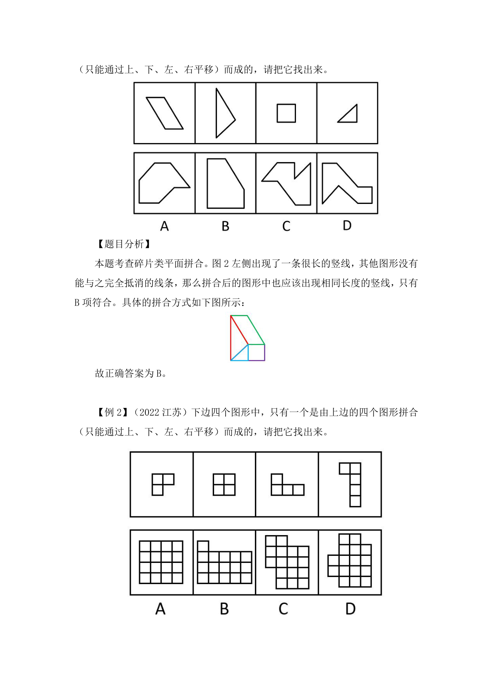
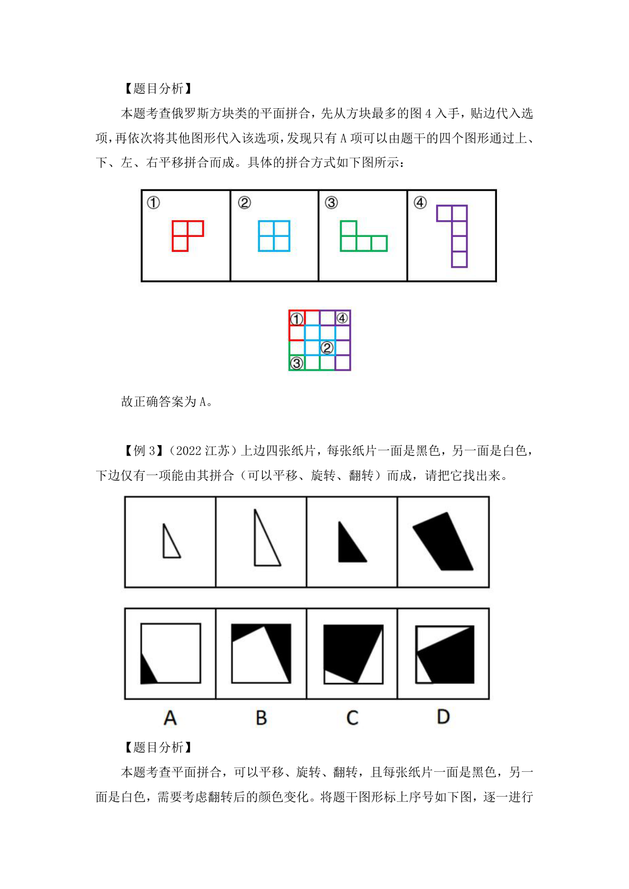
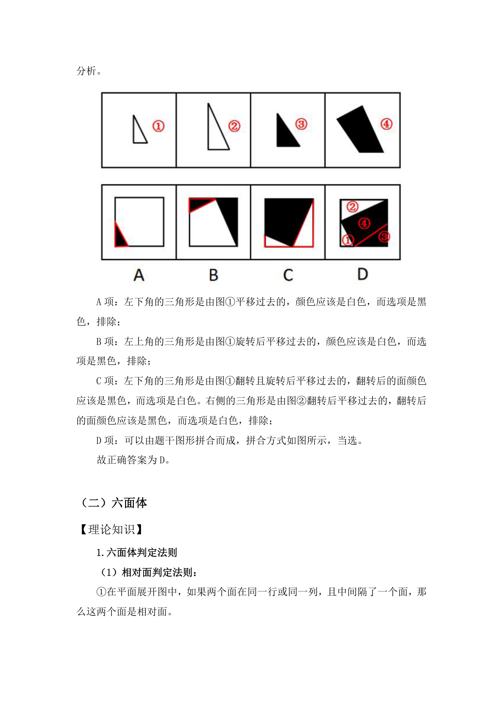
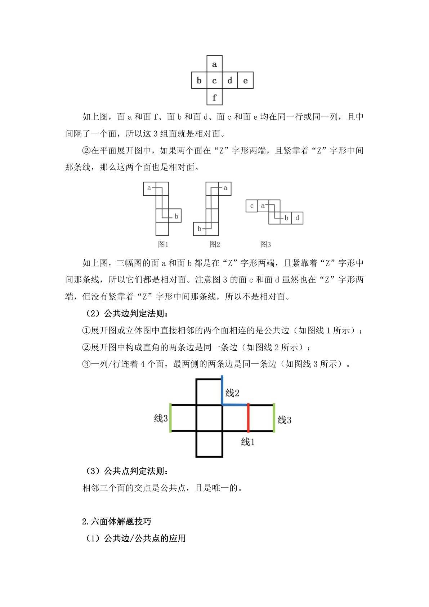
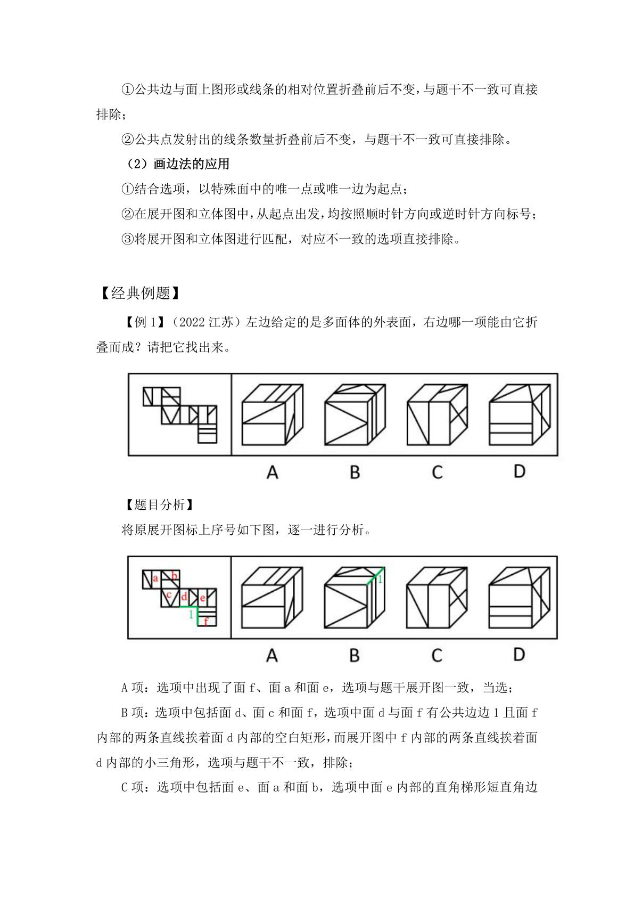
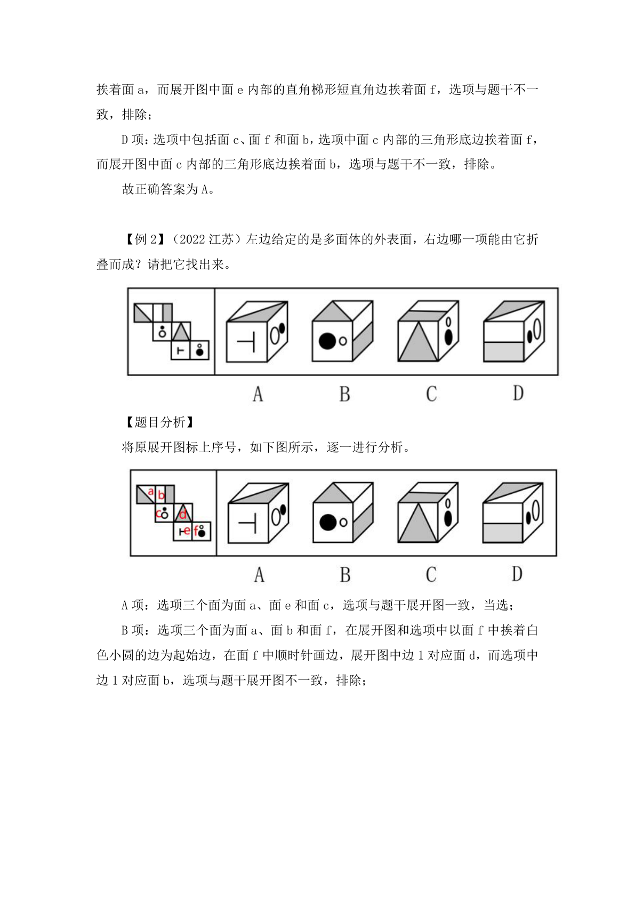
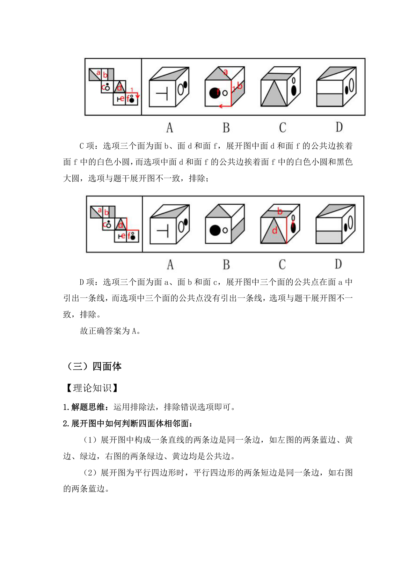
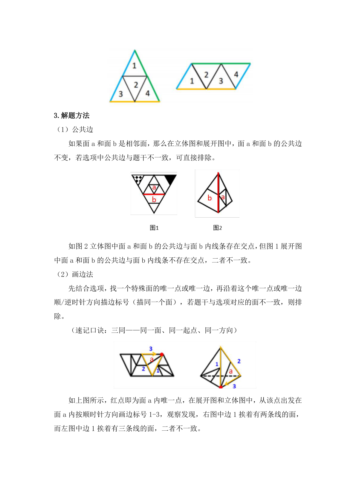
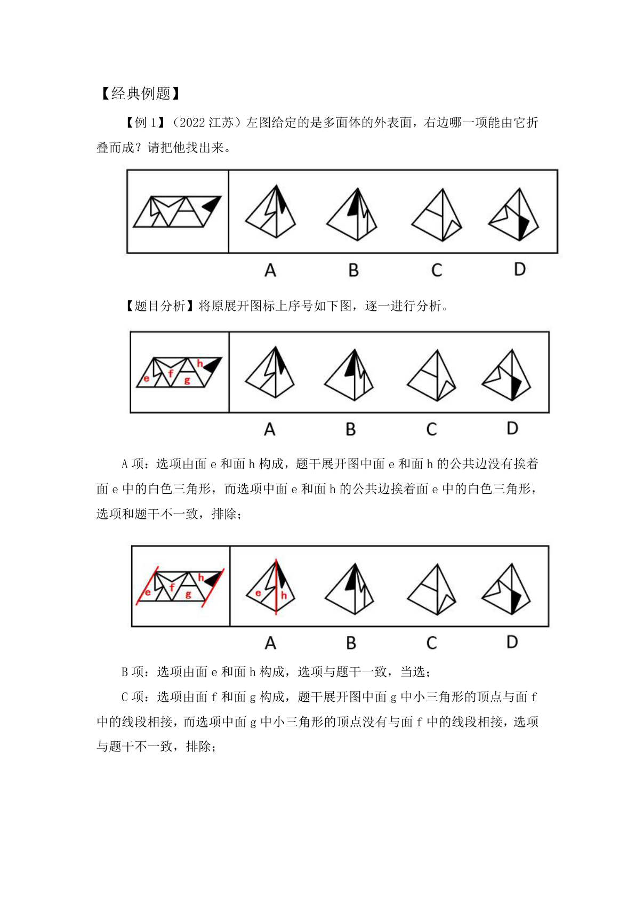
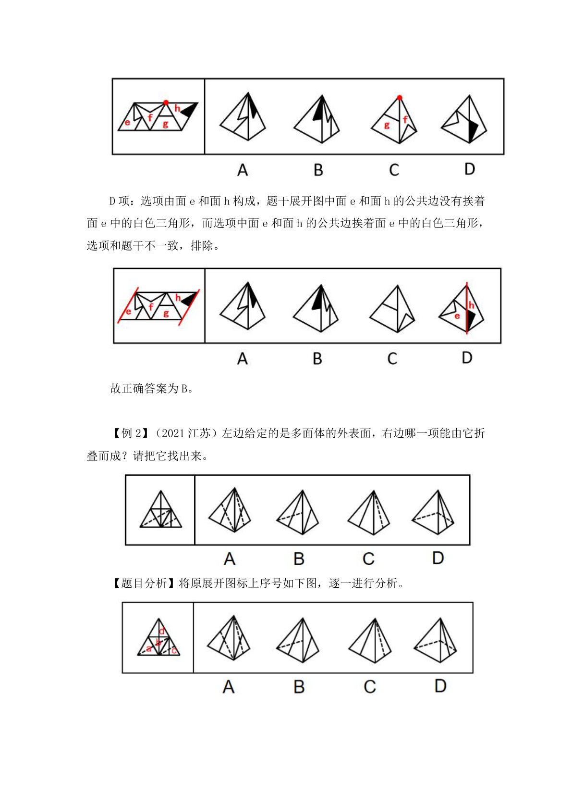
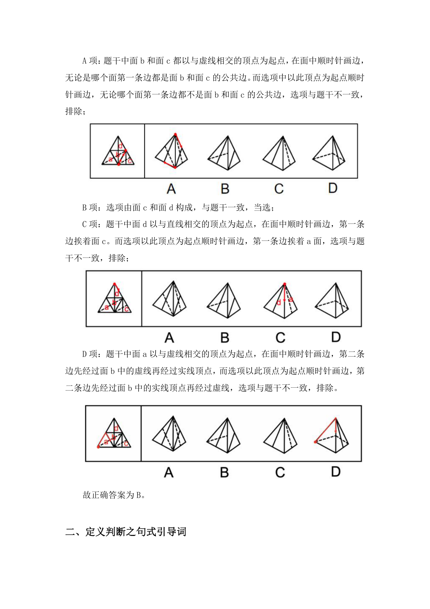
【理论知识】
定义判断解题思路：
（1）看提问：看清提问是“属于/符合”还是“不属于/不符合”；题干出
现多个定义，看清问的是哪个定义，优先阅读。
（2）看题干：识别有效信息。优先找明确的、能看懂的关键词，重点信息
做圈画，避免定义从头读到尾，来回重复读；
常考的关键信息包括：
主客体（常见关键词：个人、企业、行政主体、事业单位等），注意主客体
不符的选项一定不符合定义；
方式目的（常见关键词：根据、通过、手段、达到、实现等）
原因结果（常见关键词：由于、因为、导致、致使、造成等）
大前提（常见关键词：当……时、在……过程中、……后等）
快速锁定关键词能让我们在分析选项的时候更快，更有针对性。
（3）看选项：对比择优。题干较难读懂或者选择纠结的时候，不要死磕一
个选项。选项可以分为必然符合、可能符合、必然不符合3 类。要运用比较思维，
择优选择。
【经典例题】
【例1】（2022 江苏）去雇主化职业：指作为独立个体不受雇于任何雇主，
依托网络平台提供商品或服务并获得相应报酬的就业形式。
下列属于去雇主化职业的是：
A.林先生辞职后来到南方注册了一家绿植盆景网店，在一个多月的时间里，
租赁场地，筹措资金，完善平台，忙得不亦乐乎
B.专业买手陈女士每月穿梭在世界各地，寻找带有当季流行元素或者可能在
国内热卖的款式和品牌服装，并将其带回国内
C.小李加入了一个微信群，里面提供了许多可兼职工作的岗位，经过一番挑
选，他选择了一份帮忙代取快递的兼职，用赚来的钱贴补每月生活费
D.喜欢写作的大二学生小孟在某平台网文写手的影响下，也开始在这家平台
上更新写的小说，得到了许多粉丝的打赏，他很有成就感
【题干分析】阅读题干，找出定义关键词。本题关键词为：“作为独立个体
不受雇于任何雇主”、“依托网络平台提供商品或服务”、“获得相应报酬”。
【选项分析】
A 项：林先生辞职后注册网店提供绿植盆景，符合“作为独立个体不受雇于
任何雇主”、“依托网络平台提供商品或服务”，但未体现出获得报酬，不符合
“获得相应报酬”，不符合定义，排除；
B 项：陈女士把服装从世界各地带回国内，但未体现出是否依托网络平台售
卖，是否获得报酬，不符合“依托网络平台提供商品或服务”、“获得相应报酬”，
不符合定义，排除；
C 项：小李通过微信群找到代取快递的兼职，不符合“作为独立个体不受雇
于任何雇主”，不符合定义，排除；
D 项：小孟依托网络平台更新写的小说，符合“作为独立个体不受雇于任何
雇主”、“依托网络平台提供商品或服务”，且得到了许多粉丝的打赏，符合“获
得相应报酬”，符合定义，当选。
故正确答案为D。
【例2】（2022 江苏）田保姆：指在不改变土地承包关系的前提下，农户将
耕、种、管、收等部分或全部作业环节委托给社会化组织完成，成为规模经营的
参与者和受益者的新型农业经营方式。
下列不属于田保姆的是：
A.晚稻收割接近尾声，泥瓦匠老李仍然不慌不忙，在周边市区接了好几单活，
他家的10 亩稻田三年前已经以每年5000 元的价格租给了在家务农的邻居，连收
带运，啥都不用他操心
B.老刘夫妇近年来一直跟着亲戚在外地打工，每到收割季节都得回家忙乎一
阵子。去年，村里的几个年轻人合伙买了大型收割机，成立了生产合作社，老刘
全家商量后，就把田里的农活全部包给了他们
C.每年收获季，处置成堆的秸秆都让种植户非常头疼，为了解决这个问题，
大王庄村委会先后购置了10 套秸秆打捆、粉碎机械，及时推出了秸秆回收加工
服务项目，周围村子的农民再也不为这个事情发愁了
D.某农业科技服务公司在各个村镇建立了所管地块的示范田，定期召开现场
会，展示播种方式、田间管理等，当地不少农民变成了“甩手掌柜”，随时可以
通过扫描公司的二维码了解托管服务的进程
【题干分析】
先阅读提问，问的是“不属于”，为选非题，找到最不符合题干定义的选项
即可。接下来阅读题干并提炼关键信息，题干出现了明显的主体和客体，分别为
“农户”和“社会化组织”，需要重点阅读。
【选项分析】
A 项：该项中泥瓦匠老李只是出租了家中的10 亩稻田，符合“在不改变土
地承包关系的前提下”，但承租对象是在家务农的邻居，并非社会化组织，不符
合“农户将耕、种、管、收等部分或全部作业环节委托给社会化组织”，不符合
定义，当选；
B 项：该项中老刘全家只是把田里的农活包给村里年轻人成立的生产合作社，
符合“在不改变土地承包关系的前提下”，生产合作社属于社会化组织，且老刘
全家都是规模经营的参与者和受益者，符合“农户将耕、种、管、收等部分或全
部作业环节委托给社会化组织”、“成为规模经营的参与者和受益者”，符合定
义，排除；
C 项：该项中大王庄村委会推出的秸秆回收加工服务项目给种植户带来了便
利，但没有改变土地承包关系，符合“在不改变土地承包关系的前提下”，大王
庄村委会属于社会化组织，参与秸秆回收加工服务项目的农民都是规模经营的参
与者和受益者，符合“农户将耕、种、管、收等部分或全部作业环节委托给社会
化组织”、“成为规模经营的参与者和受益者”，符合定义，排除；
D 项：该项中某农业科技服务公司对于农民的土地来说只是起到了管理的作
用，符合“在不改变土地承包关系的前提下”，农业科技服务公司属于社会化组
织，当地参与托管服务的农民都是规模经营的参与者和受益者，符合“农户将耕、
种、管、收等部分或全部作业环节委托给社会化组织”、“成为规模经营的参与
者和受益者”，符合定义，排除。
本题为选非题，故正确答案为A。
三、类比推理之对应关系、包容关系、语义关系
（一）对应关系
【理论知识】
1.对应关系的基础考法
“对应是个筐，啥都往里装”这是我们对于对应的形象化描述，从侧面反应
出对应包含的内容非常广，包括原材料、功能、属性、动作/状态先后顺序、方
式目的、因果等。
常考的对应关系有以下几种：
（1）物品与原材料、制作工艺，如家具与木材、手镯与打磨；
（2）物品与功能，如手机与沟通、汽车与运输；
（3）属性关系，如盐与咸、叶与绿；
（4）动作/状态先后顺序，如起飞与着陆、生病与治疗；
（5）方式目的，如饮鸩与止渴、拔苗与助长；
（6）因果关系，如下雨与地湿、淋雨与感冒；
（7）依据，如规则与比赛、章程与选举。
2.对应关系的二级辨析
题干词语关系为对应关系，但根据此关系无法得出唯一正确答案，需要考虑
二级辨析。
（1）物品与原材料、制作工艺的二级辨析：
①直接/间接原材料，比如木头：家具，木头是制作家具的直接原材料；小
麦：馒头，小麦需要先磨成面粉，然后面粉再做成馒头，所以小麦是制作馒头的
间接原材料；
②物理/化学工艺，比如雕刻：雕塑，雕刻是制作雕塑的工艺，且雕刻是物
理工艺；发酵：白酒，发酵是制作白酒的工艺，且发酵是化学工艺。
（2）物品与功能的二级辨析：主要/次要功能，比如白酒：消毒，白酒的主
要功能是饮用，次要功能是消毒。
（3）属性关系的二级辨析：必然/或然属性，比如钻石：坚硬，坚硬是钻石
的必然属性；花朵：红色，红色是花朵的或然属性。
（4）动作/状态先后顺序的二级辨析：主体是否一致，比如买票：上车，买
票和上车可以是同一主体；交卷：批卷，交卷和批卷一般是不同主体。
（5）方式目的的二级辨析：方式能否达到目的，比如刻舟：求剑，通过“刻
舟”的方式无法达到“求剑”的目的，即方式不合理无法达到目的；凿壁：偷光，
通过“凿壁”的方式能够达到“偷光”的目的，即方式合理能够达到目的。
（6）因果关系的二级辨析：
①人为/自然原因，比如乱砍滥伐：土壤沙化，乱砍滥伐是导致土壤沙化的
人为原因；地震：海啸，地震是导致海啸的自然原因。
②积极/消极原因、积极/消极结果，比如努力：成功，成功是努力导致的积
极结果；懒惰：失败，失败是懒惰导致的消极结果。
（7）其他二级辨析：如果以上常考的二级辨析选不出唯一答案，还可以纵
向比较，将选项与题干词语进行比较，与题干属于同一类别的优选。
【经典例题】
【例1】（2022 江苏）论辩：辩护：共识
A.贸易：签约：利益
B.就读：休学：考试
C.调研：座谈：问卷
D.看病：诊脉：理疗
【题干分析】“论辩”和“辩护”的目的都是为了达成“共识”，二者为目
的对应关系。
【选项分析】
A 项：“贸易”和“签约”的目的都是为了获得“利益”，二者为目的对应
关系，与题干逻辑关系一致，当选；
B 项：“休学”的目的不是为了“考试”，与题干逻辑关系不一致，排除；
C 项：“调研”和“座谈”的目的不是为了“问卷”，与题干逻辑关系不一
致，排除；
D 项：“理疗”的意思是用物理疗法治疗，“看病”的目的是为了康复，并
不是为了“理疗”，与题干逻辑关系不一致，排除。
故正确答案为A。
【例2】（2022 江苏）汛情：防汛
A.疫情：免疫
B.案情：破案
C.恋情：失恋
D.亲情：相亲
【题干分析】汛情指汛期水位涨落的情况，防汛指在江河涨水的时期采取措
施，防止泛滥成灾，依据汛情防汛，二者是依据对应关系。
【选项分析】
A 项：疫情指疫病的发生和发展情况，免疫指由于具有抵抗力而不患某种传
染病，二者不是依据对应关系，与题干逻辑关系不一致，排除；
B 项：案情指案件的情节，依据案情破案，二者是依据对应关系，与题干逻
辑关系一致，当选；
C 项：先有恋情后失恋，二者不是依据对应关系，与题干逻辑关系不一致，
排除；
D 项：亲情指亲人的情义，不是依据亲情相亲，二者不是依据对应关系，与
题干逻辑关系不一致，排除。
故正确答案为B。
（二）包容关系
【理论知识】
1.基础考法
包容关系是指两个词语概念之间一个范围大，一个范围小，小概念完全被包
含在大概念之中。江苏省考具体常考查以下三种关系：
（1）种属关系：A 是B 的一种，如苹果和水果，苹果是水果的一种；
（2）组成关系：A 是B 的组成部分，如轮胎和汽车，轮胎是汽车的组成部
分；
注：确实是包容关系时，可用“是”造句来区分种属关系与组成关系，造得
通就是种属关系，造不通则是组成关系；
（3）反向种属关系：A 不是B 的一种，如石油和新能源，石油不是新能源
的一种。
2.二级辨析
题干词语关系为种属关系或组成关系，但根据此关系无法得出唯一正确答案，
需要考虑二级辨析。
（1）种属关系的二级辨析：特指与泛指
特指是指一个具体的事物，比如地球是一个特定的、具体的星球；泛指是指
一类事物，比如公路，指一类道路，并不指具体的某一条公路。
（2）组成关系的二级辨析：必然与或然
比如轮胎是汽车的必然组成部分，而导航仪是汽车的或然组成部分。
【经典例题】
【例1】（2021 江苏）头雁：雁阵
A.蜂王：蜂巢
B.猎狗：羊群
C.蚁后：工蚁
D.狮王：狮群
【题干分析】
“头雁”是“雁阵”的组成部分，二者是组成关系。
【选项分析】
A 项：“蜂巢”是“蜂王”生活的场所，二者是场所对应关系，与题干逻辑
关系不一致，排除；
B 项：“猎狗”不是“羊群”的组成部分，与题干逻辑关系不一致，排除；
C 项：“蚁后”和“工蚁”是并列关系中的反对关系，与题干逻辑关系不一
致，排除；
D 项：“狮王”是“狮群”的组成部分，二者是组成关系，与题干逻辑关系
一致，当选。
故正确答案为D。
【例2】（2022 江苏）电气：煤气：气
A.酸奶：羊奶：奶
B.银河：运河：河
C.正面：反面：面
D.榆钱：金钱：钱
【题干分析】
“电气”是利用电产生能量的方式，与“煤气”无关，而且“电气”不是“气”。
“煤气”是“气”的一种，后两者是种属关系。
【选项分析】
A 项：“酸奶”与“奶”是原材料与制成品的关系，“羊奶”是“奶”的一
种，后两者是种属关系，与题干逻辑关系不一致，排除；
B 项：“银河”与“运河”无关，而且“银河”不是“河”。“运河”是“河”
的一种，后两者是种属关系，与题干逻辑关系一致，当选；
C 项：“正面”与“反面”属于事物的两面性，二者为并列关系，二者均与
“面”构成种属关系，与题干逻辑关系不一致，排除；
D 项：“榆钱”是植物，不是“钱”，“金钱”和“钱”为全同关系，与题
干逻辑关系不一致，排除。
故正确答案为B。
（三）语义关系
【理论知识】
1.语义关系基础知识
常考的语义关系主要分为以下三种：
（1）近义关系：词语含义相近，如：水滴石穿、绳锯木断。
（2）反义关系：词语含义相反，如：见异思迁、忠贞不贰。
（3）比喻义、象征义：通过某些具体事物比喻或象征某些抽象意义，如月
亮比喻玉盘，玫瑰象征爱情。这里需要注意，比喻、象征二者之间既存在差异，
也有相同之处，考试时一般不需要进行区别。
2.语义关系二级辨析
语义关系中常搭配考查的二级辨析主要有感情色彩、程度、词语结构、词性。
【经典例题】
【例1】（2022 江苏）水中捞月：白费功夫
A.霸王之兵：勇往直前
B.天涯海角：杳无音信
C.棋逢对手：不相上下
D.蚍蜉撼树：不自量力
【题干分析】水中捞月比喻去做根本做不到的事情，只能白费力气。水中捞
月可以用来形容白费功夫，二者为比喻象征义，且水中捞月为贬义词。
【选项分析】
A 项：霸王之兵出自《孙子兵法》，形容强大的国家必须要有一支强大的军
队。勇往直前形容不怕艰险，奋勇地一直往前进。两者无明显语义关系，与题干
逻辑关系不一致，排除；
B 项：天涯海角形容极远的地方，或相隔极远。杳无音信形容没有一点消息。
两者无明显语义关系，与题干逻辑关系不一致，排除；
C 项：棋逢对手是指下棋碰上了水平相当的对手，比喻双方本领不相上下。
棋逢对手可以用来形容不相上下，二者为比喻象征义，但棋逢对手为褒义词，与
题干逻辑关系不一致，排除；
D 项：蚍蜉撼树是指蚂蚁想摇动大树，比喻狂妄，不自量力。蚍蜉撼树可以
用来形容不自量力，二者为比喻象征义，且蚍蜉撼树为贬义词，与题干逻辑关系
一致，当选。
故正确答案为D。
【例2】（2022 江苏）神奇：鬼斧神工
A.善良：大慈大悲
B.强大：不可一世
C.寒冷：冰天雪地
D.混乱：乱七八糟
【题干分析】鬼斧神工原意是像鬼神制作出来的，形容艺术技巧高超，不像
是人力所能达到的，与神奇构成近义关系。鬼斧神工用夸张的修辞来表示非常神
奇，程度加深。
【选项分析】
A 项：大慈大悲形容人心肠慈悲，乐善好施，与善良构成近义关系。但大慈
大悲没有用夸张的修辞手法，与题干逻辑关系不一致，排除；
B 项：不可一世形容人自命不凡，狂妄自大到了极点。与强大没有关系，与
题干逻辑关系不一致，排除；
C 项：冰天雪地指寒冷的地方，也形容天气非常寒冷，与寒冷构成近义关系。
冰天雪地用夸张的修辞来表示非常寒冷，程度加深，与题干逻辑关系一致，当选；
D 项：乱七八糟形容毫无条理和秩序，乱的不成样子，与混乱构成近义关系。
但乱七八糟没有用夸张的修辞手法，与题干逻辑关系不一致，排除。
故正确答案为C。
四、逻辑判断之论证、组合排列
（一）论证
【理论知识】
论证分为加强和削弱这两种题型，是江苏省考中近五年每年基本必考的题型，
需要引起考生重视。
1.解题思路
（1）看清提问：看清加强还是削弱；看清选能加强/削弱还是不能加强/削
弱；看清削弱或者加强谁的观点；
（2）找准“靶子”：找出论点和论据。根据提问方式和题干特征，找准加
强和削弱的关键信息；
（3）预设加强/削弱方式：找到“靶子”之后，不要急于看选项，而是应该
根据“靶子”内容，预设出可能呈现的答案形式，再与选项进行对比，可以更有
效地避开命题人精心设置的陷阱；
（4）对比选项：识别常见错误类型，比较选项强弱力度，择优选择正确答
案。跑题无关是最为常见的典型错误选项。
其中第（2）和（3）这两个步骤非常重要，首先要找准论点论据，其次要学
会分析二者之间的关系，如话题是否一致，根据这些我们其实就可以预设出来正
确答案应该是什么样的，带着预设去匹配选项，提升解题速度和正确率。
2.常见的加强方式
（1）补充论据：补充论据包括解释原因和举例支持两种，分别是解释论点
成立的原因和举例证明论点成立。如果解释和举例同时出现，则解释原因的力度
＞举例支持；
（2）搭桥：搭桥是指建立论据和论点之间的关系。因为搭桥同时涉及论点
和论据，所以通常情况下，若题干中论点和论据的话题明显不一致，且当提问方
式是前提、假设、必要条件、加强论证时，考查搭桥的可能性比较大，可以预设
出搭桥这种表达方式；
（3）必要条件：必要条件是指如果这个条件不成立，那么论点也一定不成
立。通常情况下，若题干中只有论点或论点论据的话题一致，且提问方式是前提、
假设、必要条件、加强论证时，可以考虑必要条件。
3.常见的削弱方式
（1）削弱论点：削弱论点是江苏省考中考查频率最高的削弱方式。当题干
只有论点或论点论据话题一致时，可以优先预设出削弱论点这种表述方式；
（2）拆桥：拆桥是指破坏论据和论点之间的关系。因为拆桥同时涉及论点
和论据，所以通常情况下，若题干中论点和论据的话题明显不一致，且提问方式
是削弱论证时，考查拆桥的可能性非常大，可以预设出拆桥这种表达方式；
（3）削弱论据：削弱论据一般有两种形式，即指出论据有错误，或者论据
没有用。当题干出现以下特征时，可考虑削弱论据：①题干中出现支持方、反对
方相互“掐架”；②论据是实验调查；
（4）因果倒置、他因削弱：当题干存在因果关系时，这时候可以考虑因果
倒置或他因削弱，且需要注意，当选项中同时存在因果倒置和他因削弱时，因果
倒置的削弱力度强于他因削弱。
【经典例题】
【例1】（2022 江苏）在广袤的中华大地上，最近几十年已经新植了数以十
亿计的树木，绿色植被的增长有目共睹，沙漠化和水土流失情况得到了极大缓解。
据此，有专家指出，中国已经是全球变绿的最重要的力量之一。
以下哪项如果为真，最能支持上述专家的观点？
A.中国西南地区和东北地区的快速造林大大减少了我国对进口木材的依赖
B.卫星数据对比显示，中国大量过去荒漠化的地方现在已经被绿色植被所覆
盖
C.中国的植被面积仅占全球的6.6%，但全球植被面积净增长的25%来自中国
D.在有些国家和地区，毁林开荒正在导致具有全球气候调节功能的雨林面积
大大减少
【题干分析】
本题论点为最后一句“据此，有专家指出”之后，论据为题干第一句话。论
点和论据都在讨论的是中国绿化的情况，话题一致，加强优先考虑补充论据。
【选项分析】
A 项：该项说中国快速造林减少了对进口木材的依赖，而论点讨论的是中国
是全球变绿的重要力量，话题不一致，无法加强，排除；
B 项：该项说中国过去荒漠化的地方已经被绿色植被所覆盖，对比的是中国
的过去情况和现在情况，而论点讨论的是中国是全球变绿的重要力量之一，话题
不一致，无法加强，排除；
C 项：该项说全球植被面积净增长的25%来自中国，补充论据说明中国是全
球变绿的重要力量之一，可以加强，当选；
D 项：该项说有些国家和地区的雨林面积大大减少，而论点讨论的是中国是
全球变绿的重要力量之一，话题不一致，无法加强，排除。
故正确答案为C。
【例2】（2022 江苏）普通话是国家通用语言，除普通话外，还有粤语、吴
语等方言。近年来，用各种方言演绎的段子大量涌入影视作品、短视频和网络综
艺节目，这些作品生动有趣，让那些即使是从小生长在普通话环境里的人也会觉
得亲切，兴起了一股学习方言的热潮。因此，有专家认为，各种方言作品大行其
道，其实不利于普通话在全国范围内的使用推广。
以下哪项如果为真，最能质疑上述专家的观点？
A.保护传承方言是国家语言文字事业的重要组成部分，也是社会大众的共同
愿望
B.方言多用于家庭等非正式场合，不会损害普通话在公共场所等正式场合的
应用
C.短时间内让方言恢复自身活力或使用频率，既缺乏可行性，也没有必要性
D.每个人都有自己的故乡，方言承载着人们的乡土之情，是普通话的根
【题干分析】
本题论点为最后一句“因此，有专家认为”之后，且无明显论据。削弱优先
考虑削弱论点，即方言的大行其道对普通话在全国推广没有影响。
【选项分析】
A 项：该项说的是保护传承方言的必要性，但未提及方言作品对普通话在全
国范围内的使用推广有何影响，话题不一致，无法削弱，排除；
B 项：该项说的是方言不会损害普通话在公共场所等正式场合的应用，而普
通话的推广使用主要集中在公共场所等正式场合，也就是说方言作品不会损害普
通话在全国范围内的推广使用，削弱论点，当选；
C 项：该项说的是短时间内不需要也很难恢复方言的活力，而论点说的是方
言作品不利于普通话在全国范围内的使用推广，话题不一致，无法削弱，排除；
D 项：该项说的是方言承载着人们的乡土之情，说的是方言的作用，但论点
说的是方言作品不利于普通话在全国范围内的使用推广，话题不一致，无法削弱，
排除。
故正确答案为B。
（二）组合排列
【理论知识】
组合排列是江苏省近五年每年必考的题型，数量较多，是一类需要将题干给
出的对象和相关信息进行匹配的题目。
1.基本方法
（1）排除法：题干条件确定，选项信息充分，优先考虑排除法。
做题思路：读一句，排一句。
（2）代入法：题干信息不确定，问题为“可能/不可能”、“补充/添加以
下哪项可以推出”，优先尝试代入法。
做题思路：假设选项正确，代入题干条件验证是否都能满足。
2.推理起点
（1）确定信息：以题干中给定的确定信息为推理起点；
（2）最大信息：以题干中出现次数最多的信息为推理起点；
（3）假设法：题干没有明确推理起点，最大信息不确定，或代入复杂时，
可使用假设法。往往用在二选一的情况下，对两种情况进行假设。
注意：组合排列解题方法并不唯一，在推理的过程中可借助列表格等辅助技
巧进行解题。值得注意的是，江苏省考的组合排列题目很喜欢结合翻译推理知识
进行考查，即题干是需要翻译的，因此当出现逻辑关联词时，为了便于解题，都
应将其翻译出来。
【经典例题】
【例1】（2022 江苏）甲、乙、丙是好朋友，一个住在城东，一个住在城南，
一个住在城西。三人相约到城北的射箭场比拼射箭技术，结果住在城南的比丙得
分低，甲比住在城东的得分高，乙和住在城南的得分不同。
根据以上陈述，可以推出以下哪项：
A.甲住城西，乙住城东
B.乙住城东，丙住城西
C.乙住城南，丙住城西
D.甲住城南，丙住城东
【题干分析】
①丙＞住在城南的；
②甲＞住在城东的；
③乙≠住在城南的。
“住在城南的”出现次数最多，为最大信息，可作为突破口。
【选项分析】
根据条件①和③可知，住在城南的既不是丙也不是乙，因此三人中住在城南
的只能是甲，则条件①可表示为丙＞甲。
再结合条件②可知，丙＞甲＞住在城东的，因此丙不可能住在城东，再结合
甲住在城南可知，丙只能住在城西，剩下的乙就住在城东，只有B 项符合。
故正确答案为B。
【例2】（2022 江苏）青山村山清水秀，环境优美，村民们在村委会带领下
规划自己的美好未来。他们计划：
（1）如果兴建葡萄庄园或修建民宿，就要开发乡村旅游；
（2）如果发展水产养殖或开发乡村旅游，则要修建民宿；
（3）如果不兴建葡萄庄园，就发展水产养殖；
（4）如果开发乡村旅游，则要改造村容村貌。
如果上述计划得以实施，可以得出以下哪项？
A.青山村会兴建葡萄庄园
B.青山村会改造村容村貌
C.青山村不会修建民宿
D.青山村不会发展水产养殖
【题干分析】
题干出现了逻辑关联词，则需要先将题干翻译出来，具体如下：
（1）兴建葡萄庄园或修建民宿→开发乡村旅游；
（2）发展水产养殖或开发乡村旅游→修建民宿；
（3）—兴建葡萄庄园→发展水产养殖；
（4）开发乡村旅游→改造村容村貌。
题干信息较多，没有明显推理起点，可从最大信息入手，条件（1）、（2）、
（4）均提到了开发乡村旅游，故从“开发乡村旅游”这个最大信息开始假设。
【选项分析】
假设开发乡村旅游，依据条件（2），或关系一真即真，可得：修建民宿。
再依据条件（1），或关系一真即真，可得：开发乡村旅游。开发乡村旅游是对
条件（4）的肯前，可得：改造村容村貌。此种假设（开发乡村旅游）与题干信
息均无矛盾。
假设不开发乡村旅游，这是对条件（1）的否后，可得：—兴建葡萄庄园且
—修建民宿。—兴建葡萄庄园是对条件（3）的肯前，可得：发展水产养殖。再
依据条件（2），或关系一真即真，可得：修建民宿，此时与已推出的不修建民
宿的信息矛盾，所以第二种假设（不开发乡村旅游）不成立。
综上所述，开发乡村旅游一定成立，开发乡村旅游是对条件（4）的肯前，
可得：改造村容村貌，因此，B 项可以推出。
故正确答案为B。
（三）翻译推理
【理论知识】
1.题型特征
题干或选项中出现多组“逻辑关联词”，如“如果……那么……”“只
要……就……”“只有……才……”“所有”“有些”“……且……”“……
或……”等。
2.解题思路
先翻译，后推理。
（1）将逻辑关联词所在句子按照翻译规则翻译为①→②的形式（①、
②分别代表一句话）。
（2）按照推理规则进行推导。
（3）特别提示：翻译规则和推理规则相当于数学中的“公式”，熟记即可
套用。要避免通过理解语义来解题，否则很容易掉入命题人设置的陷阱中。
3.相关规则
（1）翻译规则
前推后：如果……那么……、只要……就……、所有……都……
后推前：只有……才……、不……不……、除非……否则不……
（2）推理规则：
肯前必肯后，否后必否前，否前肯后不必然；
（3）且与或：
当“或”关系为真时，否定一项可以得到另一项；
（4）德·摩根定律：
—(A 且B)=—A 或—B；—(A 或B)=—A 且—B。
【经典例题】
【例1】（2022 江苏）在知识经济时代，社会持续发展的前提之一是培养大
量高素质人才，只有高校教育质量的提升才能培养出大量高素质人才，而高校教
育质量的提升一定要求高校教师整体素养的提升。
如果以上陈述为真，则可以推出以下哪项：
A.只要社会持续发展，就要求提升高校教师整体素养
B.如果没有大量高素质人才，那么高校教育质量不会有提升
C.如果培养了大量高素质人才，那么社会就能持续发展
D.如果处在知识经济时代，高校教育质量必定有所提升
【题干分析】题干翻译为：①社会持续发展→培养大量高素质人才
②培养大量高素质人才→高校教育质量提升
③高校教育质量提升→高校教师整体素养提升
以上条件可以递推出：④社会持续发展
培养大量高素质人才→高校教育质
量提升→高校教师整体素养提升
【选项分析】
A 项：翻译为社会持续发展→提升高校教师整体素养，是对④的肯前，肯前
必肯后，可以推出，当选；
B 项：翻译为大量高素质人才
高校教育质量提升，是对②的否前，否
前得不出必然结论，无法推出，排除；
C 项：翻译为培养大量高素质人才→社会持续发展，是对①的肯后，肯后得
不出必然结论，无法推出，排除；
D 项：翻译为知识经济时代→高校教育质量提升，题干中“知识经济时代”
和“高校教育质量提升”之间没有推出关系，无法推出，排除。
故正确答案为A。
五、总结
在江苏省考判断推理的高频考点中，图形推理中平面拼合、六面体和四面体
与类比推理中的对应关系、包容关系和语义关系以理论知识为基础，以灵活应用
为关键；而定义判断的句式引导词与逻辑判断中的论证题型、组合排列和翻译推
理，对考生的知识储备和理解能力都有着更高的要求，关键是要掌握对应的解题
思路，培养出正确的做题思维。备考虽然艰难，但事不畏难、行者恒至，只要坚
持一定会有收获，最后预祝大家能够取得理想的成绩！
【数量】江苏省考高频考点解读
江苏数量高频考点
江苏作为全国的经济大省、教育强省，在公务员考试中一直采用自主命题的形式。省考
笔试根据职位类别分为A、B、C 三类，其中A 类难度略大，但数量关系的考查区别不大。江
苏省考数量关系有题目类型覆盖广、题目新颖多样、题目难度高题量大等特点，一般包括5
道数字推理与15 道数学运算，其中，数字推理较为高频的考点有多级数列、机械划分、分
数数列等，数学运算有排列组合与概率、几何问题、工程问题、和差倍比问题等，本篇为大
家介绍其中较为特色的两个考点。
（一）数字推理：机械划分
机械划分一直是江苏省考中最具特色的一种数字推理题型，几乎每年的A、B、C 三类试
卷中均有考查。所谓机械划分，顾名思义就是需要将原有数据按照一定的方法，划分成两个
或两个以上的部分后，再去寻找规律，因此“划分”是解题中的重要一步。
哪些数据可以进行划分呢？比如小数2.13，以小数点为界可以划分为点前的部分“2”
与点后的部分“13”；比如带运算符号的数据2 +
13，以+和
为界可以划分
外的部
分“2”与
内的部分“13”。机械划分数列是一种特征非常明显的数列，当数列中各项均
为小数，或带有特殊符号（如
，+，-），便可考虑机械划分。
“划分”后往往采取分开看或是结合看的方法找规律。以小数数列为例，分开看，意味
着小数点前的整数部分单独组成一个数列，小数点后的小数部分也组成一个数列，两个数列
分别找规律，彼此无关联。如数列：2.1，5.2，8.4，11.8，14.16，划分为整数部分：2，5，
8，11，14，是公差为3 的等差数列；小数部分：1，2，4，8，16，是公比为2 的等比数列。
结合看，是将每一项分成的两部分进行简单运算后，利用运算结果找规律，此时“划分”出
的两部分是有关联的，如数列：2.2，3.5，9.7，13.19，37.27，每项划分的两部分结合相
加得到数列：4，8，16，32，64，是公比为2 的等比数列。其实，机械划分无论是分开看还
是结合看，考查的规律都较为简单，一般是基础数列，或是作差后可得到基础数列。
【例】
，
，10，
，
，（
）
A.
B.
C.
D.
分析：观察数列，有整数和根号，优先考虑机械划分。由于数据形式不统一，首先考虑
转化，统一为“a b”的形式：
，
，
，
，
。分别找规律，整数部分为：
1，3，5，7，9，是公差为2 的等差数列，故所求项的整数部分为9+2=11；根号部分为：2，
3，4，5，6，是公差为1 的等差数列，故所求项的根号部分为7。则所求项为
，
正确答案为C。
（二）数学运算：非典型最值问题结合代入排除法
江苏省考中非典型最值问题出题概率高，技巧性较强。非典型最值问题即为在问题中出
现“至多”、“至少”、“最多”、“最少”的最值要求，且这类问题往往会结合工程、行程、经
济利润、几何等基本考点一同出现。看似复杂的问题其实可以简单应对——解题时往往可使
用代入排除法，按照最值要求从小数（或是大数）开始代入。
【例】甲、乙两人对100 个家庭进行电话调查。若甲、乙完成对1 个家庭的调查需要的
时间分别是12 分钟和20 分钟，则他们完成这次电话调查需要的时间至少是：
A.12 小时28 分钟
B.12 小时32 分钟
C.12 小时36 分钟
D.12 小时40 分钟
分析：题干描述的是甲、乙两人需要完成的工作量与效率相关数据，因此题目本身是工
程问题，但是形式不是很常规。同时问题中出现了“至少”的最值要求，故可利用代入排除
法。由于选项都是12 小时多，计算两人12 小时调查数量为：甲
个家庭，乙
个家庭，合计60+36=96 个家庭，还剩4 个家庭未调查。问“至少”，从最小
的时间开始代入。A 项：剩余28 分钟，甲可调查2 个家庭，乙可调查1 个家庭，合计2+1=3
个，不足4 个，排除；B 项：剩余32 分钟，甲可调查2 个家庭，乙可调查1 个家庭，合计
2+1=3 个，不足4 个，排除；C 项：3 剩余6 分钟，甲可调查3 个家庭，乙可调查1 个家庭，
合计3+1=4 个，当选。故正确答案为C。
以上两个就是江苏省考在数量关系中的特色考法。备考期间抓住高频考点有助于大家提
升这类题的应对能力，在短时间内突破分数，事半功倍。
【资料】江苏省考高频考点解读
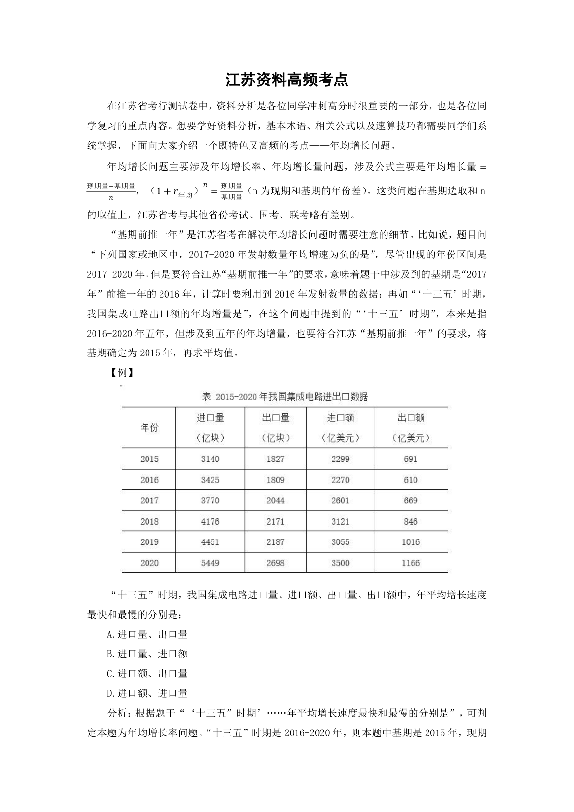
是2020 年。在表格中找到2015 年我国集成电路进口量、出口量、进口额、出口额分别为
3140 亿块、1827 亿块、2299 亿美元、691 亿美元；2020 年我国集成电路进口量、出口量、
进口额、出口额分别为5449 亿块、2698 亿块、3500 亿美元、1166 亿美元。根据年均增长
率公式：
，当年份差n 相同时，直接比较
即可，
越大，年
均增长率也越大。进口量：
；出口量：
；进口额：
；出
口额：
。比较可知，年平均增长速度最快和最慢的分别是进口量、出口量。故
正确答案为A。
以上就是江苏资料分析中比较特别的一点。对于资料分析，同学们还是要多加练习，扫
清盲点。希望大家在复习过程中可以充分体会到资料分析题型明确，解题套路性强的特点，
更好的提高分数。
【言语】江苏省考高频考点解读
江苏省考－言语高频考点答题技巧
对于言语科目来说，相信很多小伙伴都有既熟悉又陌生的感觉：明明都是自己熟悉的汉
字，但读着读着就不认识了；总是在“二选一”的时候选错答案，与正确答案“失之交臂”。
那么今天，小粉笔就带着大家了解一下江苏省考中的言语，我们一起来学习一下江苏省考中
言语模块重点题型的解题技巧。
首先，我们先来了解一下言语在江苏省考行测部分中的考查数量和具体题型。
江苏省考行测部分的总题量为135 题（C 类总题量为130 题），言语部分的考查题量为
25-35 题，2018 年考查35 题，2019-2022 年均考查30 题（2022 年B 类除外，仅考查25 题）。
由此可见，言语模块在江苏省考行测总体中还是占有一定比重的，需要大家多多重视。
从题型来看，江苏省考的言语部分涉及四大模块：逻辑填空、阅读理解、语句表达以及
篇章阅读。在阅读理解部分，中心理解题与细节判断题，考查题量较多，在近五年的江苏省
考行测言语部分中，中心理解题每年考查的题量约为4-10 题，细节判断题的考查题量约为
2-5 题；在语句表达部分，语句排序题较为重要，在近五年的江苏省考行测言语部分中，语
句排序题考查题量虽不多，均为1 题，但每年都会考查，为必考题型；当然，逻辑填空也是
较为重要的题型，在近五年的江苏省考行测言语部分中，逻辑填空每年考查的题量约为
10-15 题，算得上是言语部分的重中之重；篇章阅读为江苏省考行测言语部分中的保留曲目，
在近五年的考试中，每年都会考查一篇，在篇章阅读中，中心理解题和细节判断题是重点。
所谓“射人先射马，擒贼先擒王”，今天，我们就一起来了解一下江苏省考言语模块的“重
头戏”：中心理解题、细节判断题、语句排序题和逻辑填空题的核心解题技巧。
一、中心理解题
中心理解题，顾名思义就是要同学们读文段找中心，正确答案就是原文中心的同义替换。
在这类题型中，我们可以借助重点词与行文脉络来对文段的中心进行把握，在众多解题方法
中，江苏省考常考的则是行文脉络。因此，下面我们来一起学习一下行文脉络的相关知识点。
所谓行文脉络，就是从宏观角度，整体分析文段中句与句之间的关系，在了解了行文脉
络是什么之后，我们就一起来看看该如何分析文段的行文脉络吧。
行文脉络常见四种形式：“总-分”“分-总”“分-总-分”“分-分”。“分-分”可以
理解为并列结构，需提取共性、全面概括。其余三种均含有“总”与“分”。而行文脉络简
单来说就是学会区分“总句”与“分句”。“总句”是文段的重点与中心，即文段的中心句；
“分句”是服务于总句起到解释说明或加强论证作用的非重点内容。
“总”即文章的中心句，常如此呈现：
1.从形式看，是由重点词（如关联词、程度词等提示）引出的中心句；
2.从内容看，是核心观点。可以是解决问题的对策，可以是通过前文做铺垫得出的结论，
或是体现作者态度的评价，如由“作者认同”或“作者感慨”引导的中心句。
“分”一般指文章中不重要的内容，往往起到引出总句或论证解释总句的作用，其出现
形式常有以下几种：
1.举例子：当文段中出现“比如”“例如”“……就是例证”“诸如”“譬如”“具体
的人名/地名/书名/事件”等时，其所在句子就是对观点的举例论证；
2.数据资料：当文段中出现一些具体的数据资料时，作用相当于举例子；
3.正反论证：当文段中，前文提出观点，后文“正说说，反说说，换种说法再说说”时，
后文即为正反论证的内容；
4.原因解释：当文段中出现“因为”“由于”等表原因的关联词时，其引导的分述句是
对观点进行的原因解释；
5.并列分述：前文提出观点，后文从不同的角度论证，比如从个人、企业、国家、社会
等角度论述，或是后文出现“一方面……另一方面……”。
如果一道题目难度较高，可能是对以上几种形式进行了结合：比如文段先提出观点（中
心句），随后，可能先举例子（分述），然后进行正反论证（分述），接着进行原因解释（分
述），都属于并列分述，非重点。
“光说不练假把式。”学习了行文脉络的知识点，下面我们通过两道真题具体运用一下：
例题1（2022 江苏）獬豸，是中国古代神话传说中的“法兽”，据《论衡》中描述，其
双目明亮有神，独角，能辨是非曲直，能识善恶忠奸，有勇猛、公正的寓意。在我国一些法
院门口，往往能看到獬豸的雕像，象征着对公平正义的守护。公平正义是司法的灵魂，是人
民群众感知法治建设的一把尺子。推进全面依法治国，要紧紧围绕保障和促进社会公平正义
来进行，把这一价值追求贯穿到立法、执法、司法、守法的全过程和各方面。
这段文字意在强调：
A.古代典籍描述的獬豸是法治的象征
B.司法公平是社会的底线公平
C.法治建设要贯穿于法制工作的全过程
D.公平和正义，是法治的生命线
【文段脉络】分-总
【题目分析】文段开篇介绍了獬豸是中国古代神话传说中的“法兽”，象征着对公平正
义的守护，随后强调了公平正义对法治建设的重要性，最后指出要把公平正义落实到依法治
国的各个环节。故文段为分总结构，重点强调法治建设离不开公平正义，对应D 项。
A 项，“獬豸”对应文段首句的内容，属于话题引入部分，非重点，排除；
B 项，“司法”表述片面，排除；
C 项，仅提及“法治”，缺少另一主题词“公平正义”，排除。
故正确答案为D。
例题2（2020 江苏）《论语》最初的译本应当是1687 年在巴黎以拉丁文出版的《中国
哲学家孔子》。据不完全统计，《论语》目前有40 多种语言的译本，其中英语世界译本最
多。不同译本间的差异较大，有些译本比较忠实于语言与历史，能客观介绍《论语》及孔子
思想；有些译本则善于在翻译中寄托译者本人的使命意识，以耶稣会传教士的译著为代表；
还有些译者虽然古汉语水平不高，他们的翻译主要或部分依靠前人的译著，但他们擅于解释
和传播孔子思想，使之在异文化中产生很大影响。
这段文字重在说明：
A.《论语》的翻译活动已有三百多年的漫长历史
B.英语国家是译介《论语》的重镇
C.《论语》通过多种语言译介走向世界
D.多语种的译本传播了《论语》丰富的文化价值
【文段脉络】分-分
【题目分析】文段开篇引出《论语》译本的历史，接下来通过数据论述了《论语》不同
语言译本的数量，介绍了《论语》译本的现状。接着通过两个分号，引导三方面并列，分别
论述不同译本翻译《论语》有不同的影响：有的客观介绍《论语》及孔子思想；有的翻译中
寄托译者本人的使命意识；有的擅于解释和传播孔子思想，故文段旨在强调不同的译本都在
为传播《论语》提供不同的角度，传递不同的内容，对应D 项。
A 项，“三百多年的漫长历史”，对应文段首句，非重点，排除。
B 项，“英语国家”，非文段重点，文段意在强调不同的译本，而非英语国家，排除。
C 项，文段重点并非是通过不同的语言让世界知道了，而是通过不同的译本传递不同的
内容，故“通过多种语言译介走向世界”，偏离文段中心，排除。
故正确答案为D。
二、细节判断题
细节判断题，顾名思义就是根据文段的内容，判断选项与文段的表述是否一致，在2022
年江苏省考行测中，细节判断题在A/C 卷一共出现了3 道，在B 卷有4 道，可见这类题型也
较为重要，细节判断题不需要过于仔细分析文段的行文脉络，但需要注意提问方式是选“是”
还是选“非”，并细心地将选项与文段内容进行比对。那么，我们就来一起了解一下，细节
判断题的错误选项类型都有什么，以及如何能快速解题吧。
（一）错误选项类型
1.无中生有：
就是把没有的事情说成有。在细节判断题中，无中生有的选项就是把文段没出现过的内
容设置为选项，干扰视线。通过仔细地与文段对比，如果某一选项的内容文段中未出现，即
为无中生有；
2.偷换概念：
（1）概念替换：如文段表述“吃维生素C 可以预防老年痴呆”，选项“吃维生素C 可
以治疗老年痴呆”将“预防”替换为“治疗”；
（2）概念混搭：如文段表述A 可以推出C，B 可以推出D，选项为A 可以推出D，B 可
以推出C，即为概念混搭；
3.偷换逻辑：
（1）强加因果：文段中所介绍的主体并不存在因果关系，而选项中将文段中的主体强
加因果关系。如文段是“未来，隐形衣将被首先应用于军事领域，提高作战的隐蔽性和安全
性”，选项“隐身衣用于军事会导致战争”，属于强加因果；
（2）因果倒置：如文段是“A 导致B”，选项表述为“B 导致A”；
4.偷换时态：
（1）将来时：将要、立刻、趋势、以后、有望、如果；
（2）完成时：已、已经、曾经、了、过、完成；
（3）进行时：正在、在……中、着、尚未完成。
如文段是“我爱过你”，选项“我正在爱你”，属于偷换时态。
（二）快速解题技巧
1.对比项：
（1）对比项是常见易错选项特征；
（2）标志词：A 比B 更……、A 高于/优于B、弊大于利等，如选项是“朊病毒比细菌
危害更大”如果文段没有将二者进行对比，则犯了无关对比的错误；
2.相对绝对项：
（1）绝对表述：毫无（作用）、一定、必定、都、所有、全部、永远等，表述过于绝
对，作为错误表述的概率更高；
（2）相对表述：可能、也许、往往、之一等，表述相对温和，作为正确表述的概率更
高；
（3）否定词＋绝对表述，是相对温和的表述，作为正确表述概率更高；
3.表述与实际不符项：
选项“我国西部的教育资源特别丰富”表述与实际不符，因为一般情况下通常是东部发
达地区的教育资源更丰富，选项很可能表述错误。
学习了细节判断的错误选项特征与快速解题技巧，下面我们一起通过一道真题感受一下：
例题（2021 江苏）接种疫苗是预防和控制传染病最经济、最有效的方法之一，每个人
出生后都会接种多种疫苗。接种疫苗能够增强机体的抵抗力，提高自身的免疫能力，抵御病
菌侵袭。疫苗是一种毒性较低的病原体，接种后人体会产生相应的抗体与之对抗。当疫苗的
免疫反应平息后，这种疫苗的对应抗体会较长时间留在人体内，而另一类具有记忆功能的免
疫细胞则会将这种致病原的信息记录下来。当人体再次遭遇同一种致病原时，记忆免疫细胞
便会迅速调集已经存在的相应抗体组织起有效的防御反应。
下列关于疫苗的说法不符合文意的是：
A.本质上是一种低毒的病原体
B.是应用广泛的生物医药制品
C.具有记忆功能可以复制免疫细胞
D.通过提升机体抵抗力预防传染病
【题目分析】A 项，根据“疫苗是一种毒性较低的病原体”可知，选项表述正确，排除；
B 项，根据“接种疫苗是预防和控制传染病最经济、最有效的方法之一，每个人出生后
都会接种多种疫苗”可知，疫苗的应用十分广泛，每个人都会接种疫苗，选项表述正确，排
除；
C 项，根据“当疫苗的免疫反应平息后……而另一类具有记忆功能的免疫细胞则会将这
种致病原的信息记录下来”可知，具有记忆功能的是免疫细胞，并不是疫苗，表述错误，且
“复制免疫细胞”无中生有，当选；
D 项，根据“接种疫苗能够增强机体的抵抗力，提高自身的免疫能力，抵御病菌侵袭”
可知，选项表述正确，排除。
本题为选非题，故正确答案为C。
【技巧点拨】近五年的江苏省考非常乐衷于对选非题的考查，因此一定要对提问方式多
加注意，如果提问方式是选“非”，则表述与文段相符的选项不能选。
三、语句排序题
语句排序题，即题目给出5—7 个句子，让我们去排序，然后选择出正确选项。这类题
型主要考查考生对于句子的阅读理解能力和对句子上下文的逻辑排序能力。在考试的时候，
由于时间有限，考生把每个选项都验证一遍再确定正确答案是较难实现的，因此就要求我们
掌握一定的做题技巧。接下来，我们就来梳理一下语句排序题的解题技巧吧。
（一）确定首尾句
对于语句排序题，我们的做题顺序是：首先从选项入手，对比确定首句，也就是我们要
弄清楚什么样的句子适合作为首句，什么样的句子不适合作为首句；此外，有些题目单纯看
首句可能并不好判别，这个时候需要我们确定捆绑、确定顺序，或者“瞻前顾后”来确定尾
句。当然，在确定答案的过程中，切记要学会对比择优。
1.可作首句的特征：
（1）下定义：……就是/是指；
（2）背景引入：随着、近年来、在……大背景/环境下；
（3）在这里要提示大家的是，首句的确定需要对比，我们判别时不仅要对比形式也要
对比句子的内容。
2.非首句特征：
（1）关联词后半部分，如但/却/而且引导的句子；
（2）指代词单独出现且指代不明的句子；
（3）举例子：比如、例如、就像等。
3.可作尾句的特征：
（1）形式上是由“因此”“所以”“看来”“于是”“这”等引导的总结性句子；
（2）内容上一般情况下对策表述的句子更适合放在尾句；
（3）结论词+对策的表示是一个非常完美的尾句；
（4）需要提醒同学们的是，尾句的判断也是要对比确定，切忌想当然。
（二）确定捆绑集团
1.指代词捆绑：
当句子中出现“这、那、他、该、其、此，这些、那些、他们”等指代词时，我们就要
找到指代词究竟指代的是哪句话中的内容，进而把它们捆绑在一起。
2.关联词捆绑：
（1）如果关联词单独出现“但”“同时”等词，就需要我们分析句子的意思，找到可
以与之形成关联关系的句子。转折前后语义相反；并列关系有同义并列和反义并列，需结合
语境分析是同义并列还是反义并列。
（2）关联词配套出现：如“不但……而且……”，这时，我们可以略读下配套关联词
所在的两个句子，以判别能否捆绑。
（三）确定顺序
1.确定行文逻辑：
（1）观点+解释说明：一般先给出观点，然后进行具体的解释说明；
（2）提出问题+回答问题：一般会先提出问题，接下来回答问题；
2.日常逻辑顺序：
（1）时间先后顺序
具体年份、朝代、表示时间的词语（过去、现在、未来），当看到时间，要稍微注意一
下，在排序题当中，基本是按照从古至今的顺序来的，并且还要保证话题一致性。
（2）行动、发展的脉络等
如从小处看……往大处说。
（四）选项对比
当我们在做语句排序的时候，除了要运用到上文提到的几大技巧之外，有的时候还需要
做好选项之间的对比，换句话说，当我们在“二选一”纠结的时候，可以对比选项，对比两
个不同选项间的内在逻辑顺序，往往也可以帮助我们选择出正确答案。
学习了语句排序题的解题技巧，下面我们通过一道真题来一起感受一下：
例题（2021 江苏）
①依据书法史界最新研究成果，有人提出应关注书写工具及其工艺特性、书写姿态、书
写目的对于书法样式的决定性意义
②只有从书写工具对于书法样式的决定性影响上加以研究，才能变观风望气式的书法断
代为有理可据的科学书法断代
③就书法样式的演变而言，古人很早就有所体察
④他们将书法样式的变迁归纳为“晋人尚韵，唐人尚法，宋人尚意，元明尚态”
⑤以此建立基于书体及风格、笔画、部件、字势分析的书法断代方法论
⑥但是这种说法虚无缥缈，难以把握，更无法用作断代方法
将以上六个句子重新排列，语序正确的是：
A.②⑤⑥①③④
B.②③⑤④⑥①
C.③④⑥②①⑤
D.③②④⑤①⑥
【题目分析】观察选项，对比首句。②句论述了研究书写工具对书法样式决定性影响的
重要性，③句论述了古人很早就开始觉察书法样式的演变。首句不好判断，寻找其他线索。
④句中出现“他们”，可寻找指代词捆绑，说明④句之前应出现人。④句前分别为②③⑤三
句，③句中提到“古人”，可与④句进行捆绑，②⑤两句中均未出现人，与④句无法构成捆
绑，排除B、D 两项。再根据⑥句中出现“但是”“这种说法”可知，⑥句之前应提及某种
说法，并且要与⑥句内容构成转折关系。⑥句前分别为④⑤两句，⑤句中建立“断代方法论”
的内容无法与⑥句构成转折，排除A 项。对C 项进行验证，逻辑通顺，当选。
故正确答案为C。
【技巧点拨】对于语句排序题，一定先从选项入手，对比选项判断首句，然后再从句子
中找寻逻辑关系。
四、逻辑填空
相信很多同学在做逻辑填空的时候会感觉“跟着语感走，抓不住梦想的手”。单纯依靠
语感将选项中的词语带回到文段通读一下，觉得“通顺”就选为正确答案，结果可能会越做
越伤心。逻辑填空需要“两手抓”，一手积累词语，另一手寻找横线对应的提示信息。词语
的积累建议大家从真题入手，积累历年考过的实词和成语，需要大家课下多做题、多积累。
如何根据横线对应的提示信息解题就需要方法和技巧了。
对于江苏省考的逻辑填空题来说，“关联关系”是非常高频的考点，学会了这个知识点，
将对提高逻辑填空的正确率有不小的帮助。
（一）转折关系
1.标志词：但是、可是、然而、却、其实、事实上、实际上等；
2.要牢记转折前后语义相反、感情色彩相反，但前后语义不能矛盾。
（二）因果关系
1.标志词：因为……所以、由于……因此、导致、使得等；
2.横线前后构成因果关系。
（三）并列关系
1.同义并列：标志为“、”和“，”，同义并列前后语义相近；
2.反义并列：标志词为“不是……而是……”“是……不是……”“相反”“反之”“多
一些……少一些……”“要……不能……”等，反义并列前后语义相反相对。
3.当文段中句式相同或相近，要结合横线处前后的语境分析前后文的语义是相近还是相
反。
小伙伴们在做题时，要格外留心上述关联词，从而更准确地判断横线处想要表达的意思，
下面，让我们来通过真题感受一下关联关系的“魅力”吧！
例题（2022 江苏）现如今，各行各业因品牌效应而带来持续的经济收益十分可观，然
而农村电商在建立农业品牌的道路上可谓_________。由于受到长久以来分散生产经营的影
响，农村电商未能切实体会到农产品品牌效应所能带来的巨大收益，以至于对建立品牌的
_________不足，缺乏动力。所以，_________农村电商主体强化品牌意识至关重要。
依次填入画横线处最恰当的一项是：
A.举步维艰兴趣引导
B.孤军奋战认识扶持
C.一筹莫展经验协助
D.凤毛麟角信心敦促
【关联关系】转折关系
【题目分析】第一空，“然而”表示转折关系，根据前文“各行各业因品牌效应而带来
持续的经济收益十分可观”可知，农村电商在建立农业品牌方面的情况应与之相反，处境艰
难。A 项“举步维艰”比喻办事情每向前进行一步都十分不容易，C 项“一筹莫展”意为一
点办法也没有，均符合文意，保留。B 项“孤军奋战”比喻单独承担任务或工作，根据文意
可知，文段并未强调农村电商缺乏支持，与文意不符，排除；D 项“凤毛麟角”比喻难得而
宝贵的人或事物，与文意不符，排除。
第二空，根据前文“农村电商未能切实体会到……收益”和后文“缺乏动力”可知，横
线处要体现农村电商对建立品牌的意愿并不强烈。A 项“兴趣”意为对事物感觉喜好或关切
的情绪，符合文意，保留。C 项“经验”意为通过实践得来的知识或技能，强调已有的实践，
而非意愿，排除。
第三空，代入验证，A 项“引导”农村电商主体强化品牌意识，搭配恰当且与文意相符，
当选。
故正确答案为A。
“功崇惟志，业广惟勤”，这句话的意思是：取得伟大的功业，是由于有伟大的志向；
完成伟大的功业，在于辛勤不懈地工作。因此，理论知识需要学习，课后练习也要跟上，勤
学苦练，今年公考肯定行，小伙伴们加油！
【申论】江苏省考高频考点解读
江苏申论高频考点解读
通过对近几年江苏申论真题的细致分析发现，江苏申论ABC 类考试几乎涉及申论所有题
型——单一题、综合题、公文题和文章写作题。但再仔细分析发现，每个题型中都有侧重考
查的考点。接下来，小粉笔就带大家一一攻破江苏申论考试中的高频考点。
一、归纳概括要点的应对技巧
（一）答题技巧——巧妙应对“概括”
1.认识事例资料
一般而言，事例型材料以记叙为主，通过讲述某个人或某地的事件、故事的方式呈现，
多描述性、口语化、冗长啰嗦的语言，较少有规范性、总结性的词汇供考生直接摘抄，易被
考生忽略而失去得分要点，所以更要引起大家重视。接下来就要带领大家通过具体事例型材
料的分析，让大家了解从事例中概括归纳出关键信息、提炼出答案要点的方法。
2.提炼事例型资料的作答技巧
（1）阅读题干，判断作答主题及要素：结合题干作答要素，通过要素本身的特征重点
挖掘材料相应信息，概括归纳出作答要点。例如：题干的要素是“问题”，就要留心材料中
表消极感情色彩的词句等；题干要求答对策，就要多关注材料中的建议性表达。
（2）表达技巧：①要有归纳意识。对材料的中信息要尽量高度概括，使表达词汇简明、
规范。②关键词多样化意识。在字数允许的情况下，一个信息点可以多个近义词、同义词，
提高得分可能性。
3.学以致用
【例】（2022 江苏A）“给定资料1～3 中”列举了新时代出现的一些新职业，这些新
职业对社会发展起到了一定的积极作用，请用一段话对此进行概括。（20 分）
要求：紧扣给定资料，准确全面，条理清晰，语言流畅。篇幅不超过250 字。。
【题目分析】
结合题干，可以确定作答要素是积极作用，即“意义”，它是正面的，强调的是一种好
的结果，所以在阅读资料时，可以重点看“效率”“信心”等正面词汇集中出现的段落、词
句。此外，此题给定资料中有较多事例型材料，语言口语化、冗长。我们锁定相关的信息后，
要用规范性的词汇概括归纳出意义。
资料节选：
2021 年“双十一”前夕，某大学研究生会公众号上一篇题为“不做吃土尾款人，当你
看完这些书”的文章在朋友圈引起共鸣，“剁手党”们纷纷转发。文章推荐了《断舍离》《精
准购买》等书籍，希望大家“双十一”期间，购入真正适合自己的东西，理性购物。每年的
“双十一”，在成交额一再刷新的同时，也成为“非理性购物综合征”的集中爆发期。“乱
花渐欲迷人眼”，当自我约束与理性消费的呼声渐高，“网上导购师”这种时髦职业就诞生
了。
〖本段介绍了“网上导购师”这一新兴职业，阅读段尾句“当自我约束与理性消费的呼
声渐高，‘网上导购师’这种时髦职业就诞生了”，网上导购师的诞生解决了“自我约束与
理性消费”的需求，这是对社会发展起到的积极作用，由此可直接摘抄出要点：网上导购师
引导自我约束和理性消费。〗
根据淘宝信息显示，最贵的网上导购师收费价格在199 元一小时。导购师不仅可以帮助
客户以最合理的价格达成交易，还会根据客户的需求提出合理购物建议，这种来自“网络达
人”的建议往往对客户帮助很大。有专家指出，“网上导购师”这种新职业是典型的“平台
+履约人”模式，相较于传统的“公司+雇员”关系，就业的稳定性固然差了些，但提供了最
大限度的平等和自由，因而越来越被年轻人所接受。
〖本段承接上一段，阐述了导购师的具体作用及主要特点。（1）阅读并列关联词“不
仅……还……”引导的句子“导购师不仅可以帮助客户以最合理的价格达成交易，还会根据
客户的需求提出合理购物建议”，介绍了导购师起到的实际作用，其中“以最合理的价格达
成交易”表述冗长，可概括出要点：网上导购师帮助客户减少支出。“提出合理购物建议”
表述规范，可摘抄出要点：网上导购师为客户提供购物建议。（2）阅读转折关联词“但……”
引导的句子“‘网上导购师’这种新职业是典型的‘平台+履约人’模式，相较于传统的‘公
司+雇员’关系，就业的稳定性固然差了些，但提供了最大限度的平等和自由”，可知网上
导购师的不足与作用，其中“提供了最大限度的平等和自由”提示作用，可概括出要点：提
供平等自由的工作模式。〗
话题梳理：
以上两段都围绕着“网上导购师”这一职业展开，段1 先介绍了“网上导购师”的产生
背景，段2 叙述了社会对网上导购师的需求，再介绍其起到的积极作用，具体要点可按照资
料逻辑逐一罗列，相似要点可适当合并。
要点总结：
网上导购师为客户提供购物建议，减少支出，引导其自我约束和理性消费，并提供平等
自由的工作模式。
一个微信群有管理员不稀奇，但一个管理员“管”近300 个群、数万网友，你听说过吗？
在H 市中心的一所商务楼里，这样的社群管理师已经有近百人。他们每天活跃在电脑的一端，
与数以万计的网友“侃大山”，帮助企业维持群的活跃度、增强用户粘性。
〖本段介绍了“社群管理师”这一职业及其作用。阅读段尾句“帮助企业维持群的活跃
度、增强用户粘性”，提示作用，可摘抄出要点：社群管理师帮助企业维持用户活跃度，
增强粘性。〗
“恭喜您抢到优惠券，记得截图去门店领取哦”“请不要在群里发小广告，违者要踢出
群哦”……安静的房间里，只听见电脑键盘啪嗒啪嗒的敲击声。一个年轻人端坐在桌子前，
一边点开微信群查看消息，一边选择合适的用语，及时回复群友。这就是社群管理师小徐每
天的工作常态。小徐说：“一个社群管理师需要身兼气氛组、客服中心、接梗王等多重角色。
很多人平时看着闷声不响，线上却是气氛担当。通俗地说，闷骚的人比较适合这个职业。”
当前线上社交已成为年轻人生活的重要一环，通过微信群来了解社会几乎是普适需求，而对
于一些偏内向的年轻人来说，当社群管理师则既提供了相对稳定的收入，又能扬个人所长。
〖本段承接上一段，阐释了“社群管理师”的工作日常及作用。阅读段尾处的“对于一
些偏内向的年轻人来说，当社群管理师则既提供了相对稳定的收入，又能扬个人所长”，说
明这一职业的出现可以解决“偏内向的年轻人”的就业问题，可概括出要点：满足特定群体
就业需求。〗
话题梳理：
以上两段都围绕着“社群管理师”这一职业展开，段3 先介绍了社群管理师的工作内容
及主要作用，段4 叙述了社群管理师的工作场景及作用，具体要点可按照资料逻辑逐一罗列，
相似要点适当合并。
要点总结：
社群管理师帮助企业维持用户活跃度，增强粘性，满足特定群体就业需求。
【要点总结梳理】
1.网上导购师为客户提供购物建议，减少支出，引导其自我约束和理性消费，并提供平
等自由的工作模式；
2.社群管理师帮助企业维持用户活跃度，增强粘性，满足特定群体就业需求；。
技巧总结：
面对事例型材料：考生要结合题干作答要素，通过要素本身的特征重点挖掘材料相应信
息，进而概括归纳出作答要点。
注意：在作答时，①要有归纳意识。对材料的中信息要尽量高度概括，使表达词汇简明、
规范。②要有关键词多样化意识。在字数允许的情况下，一个信息点可以提炼为多个近义词、
同义词，提高得分可能性。
总之，希望大家在进行申论学习时，不要忽略对于事例型材料的学习。但是，也要从题
目本身出发，培养具体问题具体分析的意识，合理应对事例型材料。在平时的备考中，也要
注重对规范性词语的积累，积累相关经验。
（二）答题技巧——巧妙应对“分类”
众所周知，江苏省考申论考试题干经常要求考生分类、归纳，这也是很多同学遇到的难
点。不要怕，今天小粉笔以几道题目为例带着大家打开思路，巧妙应对分类！
一、初识分类
什么时候需要分类呢？当题干或者要求中出现“分类合理、分别、种种、层次分明、归
纳”等词汇时，需要我们对找到的答案要点进行分类。
【例】请归纳概括“给定资料1”中媒体在推动社会发展方面的作用。（20 分）
要求：紧扣给定材料，准确全面，条理清楚。篇幅不超过250 字。
【例】仔细阅读“给定资料”，分类归纳资料中所反映出来的政府及相关职能部门的不
同“作为”并作简要说明。（20 分）
要求：全面、准确、紧贴资料，篇幅不超过250 字。
【例】根据给定资料1，简述资料中的做法在改善和提高公共服务方面有哪些可借鉴的
经验。（15 分）
要求：紧扣材料，内容具体，逻辑清晰，层次分明，不超过200 字。
二、如何分类
1.按照“辩证”思维分类
在作答时，如果在材料中找到的相关内容有明显不同的感情倾向，如积极影响和消极影
响，成绩与问题时，可以利用辩证法进行分类。
【例】“给定资料”列举了新形势下呈现出的一些社会现象，请归纳概括出这些社会现
象对形成社会风气所产生的影响。
【参考答案】
对家庭的积极影响有：1.德孝文化节树立榜样，传承孝道；2.抢红包促进互动交流；3.
祭祖倡导孝亲尊师、家庭和睦；4.办家报传承良好家风，增强凝聚力。负面影响有：1.祖屋
年久失修，祭祖铺张迷信，不重精神实质；2.随礼之风严重，亲情异化为利益交换；3.父母
教孩子说谎，阻碍孩子道德养成；4.富二代学业荒废，不求上进。
对社会的积极影响有：1.磨刀老人助人为乐，无私奉献，带动行善风气；2.祭祖形式简
洁，推动文明环保，传承文化传统。负面影响有：1.抢红包异化为贿赂工具，农村黄赌成风，
加剧道德滑坡；2.祭祖烧纸引发火灾，破坏环境。
【粉笔提示】
本题需要归纳分类，从材料中找到新形势下的社会现象对社会风气形成的影响有好有
坏，最终答案呈现可以按照积极影响和消极影响来分类。
2.按照“不同领域”分类
“不同领域”指的是“五位一体”即政治、经济、文化、社会、生态；或者是经济领域
下细分的领域，如农业、工业、服务业，社会生活领域下细分的领域，如教育、医疗、养老、
就业等。
【例】“给定资料”列举了改革过程中出台的一系列与百姓生活息息相关的新政策，请
对这些新政策的主要动因进行归纳概括。
【参考答案】
新政策的主要动因是让利于民。
一、社会层面：1.满足群众生育愿望。2.改善群众住房条件。3.促进社会公平和公民权
利平等，让农业转移人口融入城市，弥补城乡户籍间福利差异，实现城乡制度衔接。4.促进
教育公平。5.鼓励大学生创业。
二、生态经济层面：1.平衡经济发展与生态保护，提高居民生活水平。2.让农民成为土
地流转和规模经营的参与者和受益者，指明土地制度改革方向。
三、文化层面：建设书香社会，解决农民买书难、借书难、看书难问题，丰富农民科学
知识。
四、政治层面：方便群众，节省行政资源，提高行政效能。
【粉笔提示】
本题答案是从社会、生态经济、文化、政治这四个领域进行归纳分类，其中，材料中并
没有将生态与经济进行明显的划分，而是结合起来讨论，所以将生态与经济领域合并在一起。
3.按照“材料脉络”分类
材料本身自带逻辑，比如多个材料之间，或者一个材料内段落与段落之间所讲的话题是
不一致的，如产业发展来说，若是材料的逻辑为种植规模化、设施完善、拓宽销售、发展特
色旅游业这几个角度，则我们可以按照此材料逻辑进行分类。
【例】假如你是某市综合行政执法局的一名工作人员，请结合“给定资料5”，就“如
何开展网络直播，让执法过程变成一堂生动的法治公开课”提出建议。
【参考答案】
一、直播方式多样化。结合法条讲解、案例警示、科学实验、市民互动等方式，运用活
泼语言，进行真实演绎，多角度展现普法工作。
二、直播地点典型化。围绕直播内容，选择典型地点，在现场选择讲解对象，展开深入
分析，调动群众兴趣，顺势普及知识。
三、内容选取针对性。结合市民的学习、生活、工作、出行等方面的实际需求，联系当
下现实情况，确定直播主题，细心安排、贴心服务。
四、氛围营造轻松化。与网络主播直播连麦，形成强烈反差，制造戏剧性情节、结局，
制造热点话题，扩大传播范围。
五、宣传手段创新化。将知识植入网络游戏等媒介，重现陷阱套路，让群众身处其境，
加深教育效果。。
【粉笔提示】
本题根据材料逻辑梳理出这五个方面内容，从“直播方式多样化”“直播地点典型化”
“内容选取针对性”“氛围营造轻松化”“宣传手段创新化”不同的层面进行分类。
3.总结
相信通过以上的方法技巧传递，大家应该对江苏省考的分类有一定的掌握，但是要记住，
方法技巧只是做题的辅助手段，尊重材料逻辑进行分类才是王道！
二、侧重考查题型的应对技巧
（一）单一题之非常规要素类的应对技巧
在单一题的考查中，我们按照要素出现的频次、作答思路是否固定划分为常规要素和非
常规要素。常规要素有：问题、对策、危害、意义等。但是在考试中，并非只对这些常规的
要素进行考查，根据近几年江苏申论的考情，一些非常规要素出现的频次越来越高。接下来，
小粉笔就细致讲解江苏申论高频考点之非常规要素类单一题的解题技巧。
1.题型识别
【例】（2021 年江苏A）“给定资料1-3”中列举了新形势下一些地方在社会发展变局
中服务民生的新举措，请对其中蕴含的服务理念进行归纳概括。（20 分）
要求：紧扣给定资料，准确全面，条理清楚，篇幅不超过250 字。
【粉笔审题】
由“服务理念……归纳概括”可知本题是单一题，结合主题，“服务理念”可理解为服
务民生的思想、观念等。。
2.答题技巧：
（1）将非常规要素转化为常规要素作答
该种思路是作答非常规要素单一题时相对常见的思路，在实际的操作过程中也比较简
单，仅比常规要素的单一题多一步转换的过程，就是根据该要素的含义，与我们常规要素
相联系，如果含义相同或相似，我们就可以将其转换为我们常见的要素，然后按照常规要
素的作答思路进行答题。
（2）将非常规要素联系日常实际理解作答
该种思路在作答非常规要素时有一定的难度，但是在考试过程中，该思路的适用情形相
对较广，但是需要考生对于作答要素以及材料进行比较深入的理解和剖析。在考试过程中，
需要考生先对作答要素进行理解，根据该要素的字面含义联系日常实际生活，以日常生活中
的事例等为基础，指导我们梳理材料，查找要点解题。
【例】（2022 江苏C）“给定资料1-3”呈现了互联网科技给农村生产生活带来的新变
化，请用一段话对此加以归纳概括。（15 分）
要求：紧扣给定资料，准确全面。条理清晰，语言通顺。篇幅不超过250 字。
【粉笔审题】
此题为单一题，“作答要素为“变化”。“变化”即与之前有所不同，阅读资料时，可
重点关注互联网科技为农村生活带来的不同之处。注意：“请用一段话”提示答案整体以“一
段话”的形式来呈现。
【找要点】
资料1
段1：这是新的征程，也是新的起点。2021 年2 月25 日16 时，北京市朝阳区太阳宫北
街1 号，“国家乡村振兴局”的牌子正式挂出。此前，“国务院扶贫开发领导小组办公室”
的牌子已经摘下，一摘一挂，所体现的正是脱贫攻坚与乡村振兴的有机衔接。
〖本段主要介绍“国家乡村振兴局”正式挂牌，属于背景性资料，略读即可。〗
段2：“‘老黄历’管不了新农田”“水是苗的命，也是苗的病”……这段时间，K 县
高级农艺师老童凭借“硬核知识”成了农户心中的“网红”。在助农网课中，他的许多“金
句”获得种田人的“花式点赞”，一堂课下来点击量达13 万人次。如果说在线培训、网购
农资等是“互联网+农业”的浅层对接，那依托云计算、大数据、物联网等新技术崛起的智
慧农业则是两者的深度融合。“你看，我们基地上万亩田地的耕作层深度、有无重复耕作和
漏耕的情况一目了然。”K 县农业科技发展有限公司负责人老班打开手机上的“大田物联APP”
说。他们的田间都装有物联网设备，可以随时监测田地的土壤温度、湿度、光照度以及农作
物长势等，科学种田在今天有了新的内涵。
〖本段主要介绍互联网给农业生产方式带来的变化。（1）“K 县高级农艺师老童凭借
‘硬核知识’成了农户心中的‘网红’”“在助农网课中”提示现在农户通过网课提升自身
农业生产知识，“高级农艺师”“硬核知识”均强调了农业知识的“专业性”，因此可概括
得到要点：生产专业性提升。（2）阅读“在线培训、网购农资等是‘互联网+农业’的浅层
对接”可知，互联网与农业进行了对接，出现在线培训、网购农资等，方便了农业生产，由
此可概括得到要点：在线培训、网购农资普及，生产便利性提升。（3）“依托……等新技
术崛起的智慧农业则是两者的深度融合”提示互联网为农业带来的深度变化，表述规范，可
从中摘抄出要点：智慧农业崛起。（4）负责人老班的话“我们基地上万亩田地的耕作层深
度、有无重复耕作和漏耕的情况一目了然”提示了互联网给田地耕作带来的变化，其中“上
万亩”强调了规模化生产，“耕作层深度”“重复耕作”“漏耕”等则强调了精细化生产，
因此可概括得到要点：生产规模化、精细化。注：“他们的田间都装有物联网设备，可以随
时监测田地的土壤温度、湿度、光照度以及农作物长势等”同样强调了生产的精细化，不重
复出点。（5）尾句“科学种田在今天有了新的内涵”提示今天的农业生产方式有了新的变
化，实现了升级，因此可概括得到要点：生产方式升级。〗
段2 话题梳理：
段2 在结构上呈“分-总”关系，先叙述了“互联网+农业”的浅层对接，再叙述了智慧
农业的深度融合，最后尾句总结全段，指出农业生产方式得到升级。因此可将概括性较强的
“生产方式升级”作为总括句前置，具体变化分为两个层次，一是浅层对接，生产专业性、
便利性提升；二是深度融合，生产规模化、精细化。
段2 要点总结：
生产方式升级。在线培训、网购农资普及，生产专业性、便利性提升；智慧农业崛起，
生产规模化、精细化。
段3：L 镇是有名的苹果种植基地，果子因“丑”起名，表皮粗糙且果皮长得极不规则，
但香脆可口、甜度高，深受市场欢迎。今年由于雨水少，苹果的果径普遍偏小，但种植户老
廖对此并不担心，老寥说：“家里种了近600 颗苹果树，今年果子小是小了点，但一点也不
愁卖，村里的小何早就以2.2 元一斤的价格把我的果子全包了。”小何是当地最大的苹果收
购商和经销商。每年丰收季一到，小何就没日没夜地盯在果园里，苹果一摘下就被装进了“加
硬加厚”的包装箱里，还有专门定制的“包装卡座”和加厚的泡沫。他还花大价钱建起了标
准化仓库，引进了自动分拣包装流水线，大大提升了运销效率。小何说，最忙的时候，光打
包的工人就有100 多位，人均工资每天200 元左右。今年，他经营的网店已“拼”出10 万
多单苹果，复购率一直保持在60%左右。现在，他每天都要收购10 多万斤苹果。在当地，
像小何这样的电商从业者，每天穿梭于各个农产品基地；他们通过“源头分级、产地直发”
等模式，将零散的市场需求和产地货源直接相连；他们带去了现金补贴、万人拼团等一系列
平台扶持资源，帮助农户们卖得多、卖得远、卖得好。据悉，在K 县的一些农产品生产重镇，
电商销售的比重已达50%，百姓熟悉的传统行业，正呈现出一派新气象。
〖（1）阅读“苹果一摘下就被装进了‘加硬加厚’的包装箱里，还有专门定制的‘包
装卡座’和加厚的泡沫”“引进了自动分拣包装流水线”可知，电商在农产品包装方面做出
了改变，其中“加硬加厚”“专门”“包装卡座”提示了包装的专业化，“自动”“流水线”
提示了包装的自动化，因此可概括得到要点：包装专业化、自动化。（2）“大大提升了运
销效率”提示通过包装的改变，在运销效率上的变化，表述规范，可摘抄得到要点：运销效
率提升。（3）“光打包的工人就有100 多位，人均工资每天200 元左右”提示电商为工人
创造了岗位，提高了他们的收入，可概括得到要点：创造工作岗位，提高收入。（4）段中
“将零散的市场需求和产地货源直接相连”指出了电商从业者实现了市场需求和产地货源的
对接，可概括得到要点：实现产需对接。（5）阅读“帮助农户们卖得多、卖得远、卖得好”
中，“卖得多”“卖得好”强调了销量的提升，“卖得远”强调了销售范围的扩大，可概括
得到要点：提升农产品销量，扩大销售范围。（6）尾句“电商销售的比重已达50%，百姓
熟悉的传统行业，正呈现出一派新气象”中，“50%”强调了电商在农产品销售中不断普及，
“新气象”则提示电商让传统的销售模式发生了新的变化，实现了升级，因此可概括得到要
点：电商普及，销售模式升级。〗
段3 话题梳理：
段3 介绍了两个方面的内容。
一方面是互联网给农产品的销售模式带来的变化，可将概括性较强的“销售模式升级”
作为总括句前置，具体变化分为两个层次，一是产品包装专业化、自动化；二是电商普及，
产品销量增加。
另一方面是电商给就业创业带来的变化，创造岗位、提高收入。
段3 要点总结：
销售模式升级。包装专业化、自动化，运销效率提升；电商普及，实现产需对接，提升
农产品销量，扩大销售范围。
创造工作岗位，提高收入。
资料2
段1：“快来看，这是荞麦面烘干以后的样子……”11 月1 日上午9 时，主播小韩开始
了一天的工作。今天，他要为广大网友介绍荞麦面制作的全过程。去年7 月，小韩在某农产
品加工公司抖音号开始了“带货之旅”，把家乡的特色面食推向全国。彼时，他只是公司的
一名普通销售，近两年随着电商快速发展，爱说爱笑的小韩被公司发掘出来，承担起了带货
主播的职责。几千平方米的工作区内，机器正在有条不紊地运转，轰鸣声着实不小……戴着
头套、身着工作服的小韩“扯着嗓门”为网友们讲解：“烘干后的荞麦面还要经过4 个小时
的回潮，面条才会蓬松，口感才会爽滑筋道……”直播间里，魔芋荞麦面、黑麦荞麦面、蔬
菜面等十几种特色面食尤其受欢迎，网友们还学到了荞麦面不同的做法和吃法，“双十一”
当天，累计达成交易额45 万元。直播结束后，研究后台数据是必不可少的工作，反复琢磨
如何提高直播效果和短视频质量，成了直播团队的习惯。“直播间的设备、表达技巧、网络
信号……一切都要考虑细致周到。”小韩说，“每次直播都是挑战，要拿出最佳状态来。”
现在农产品加工公司抖音账号里的视频最高点击量超过了100 万，1.3 万多名网友点赞。
〖（1）阅读“把家乡的特色面食推向全国”可知，直播带货增加了农产品的知名度，
扩大销售范围，可概括得到要点：提升农产品知名度。注：其中“扩大销售范围”在资料1
段3 中写过，不重复出点。（2）“近两年随着电商快速发展，爱说爱笑的小韩被公司发掘
出来，承担起了带货主播的职责”，提示电商创造了新的工作岗位，在资料1 段3 中写过，
不重复出点。（3）阅读“研究后台数据是必不可少的工作，反复琢磨如何提高直播效果和
短视频质量，成了直播团队的习惯”“每次直播都是挑战”，提示各直播平台竞争激烈，促
使平台工作者在直播结束后，还要研究数据等内容，来提高工作能力，可分析推导出要点：
平台竞争激烈，促使劳动者提高工作能力。（4）尾句“现在农产品加工公司抖音账号里的
视频最高点击量超过了100 万，1.3 万多名网友点赞”介绍了通过抖音等短视频提升了农产
品的知名度，前文写过，不重复出点。〗
段2：“今天给大家带来的牛肉干，来自科尔沁草原，全是黄牛后腿肉。一袋400 克，
都是独立真空的小包装。原价128 元，今天的价格一袋是99 元，两袋起拍……”近日，在
某电商直播间里，回乡创业的带货主播小杨正热情地推荐着家乡的牛肉干、大米、有机干豆
角等特产，在线观看和互动的人数不断飙升，电商直播基地里共有5 个直播间，小杨几乎每
天都要来工作几个小时。互联网大数据把当地特色农产品变成了增收致富的“金钥匙”，让
“流量”成为了“销量”，“我们与国内知名网上商城合作，借助‘年货节’过年不打烊公
益直播等活动，上半年农产品线上销售额已突破了百万元，”小杨开心地说，“互联网不仅
让农产品‘出圈’了，也让我们出‘圈’了。”
〖本段通过主播小杨的事例介绍互联网给创业带来的变化。（1）阅读“回乡创业的带
货主播小杨正热情地推荐着家乡的……等特产”可知，电商的兴起创造了创业机遇，为人才
的回流提供了条件，可概括得到要点：创造创业机遇，推动人才回流。（2）尾句“互联网
不仅让农产品‘出圈’了，也让我们出‘圈’了”提示互联网提升了农产品的知名度，前文
写过，不重复出点；也提示互联网成就了小杨等带货主播，使其成为了网红，因此可概括得
到要点：打造农村网红。〗
资料2 话题梳理：
资料2 介绍了两个方面的内容。
一方面是电商给农产品知名度带来的变化，可与资料1 段3 中的要点合并。
另一方面是电商给就业创业带来的变化，可提炼出“带动就业创业”作为总括句前置，
具体变化分为两个层次，一是带动创业，推动人才回流；二是带动就业，打造农村网红。
资料2 要点总结：
提升农产品知名度。
带动就业创业。创造创业机遇，推动人才回流；平台竞争激烈，促使劳动者提高工作能
力，打造农村网红。
资料3
段1：“连上Wi-Fi，点击微信图标……”69 岁的孙大妈一大早就来到N 镇万安村文化
活动中心当起了学生，上起老年智能手机课。“年初，儿子给换的智能手机，可每次出门要
查健康码时，还是要找别人帮忙操作，不学习真是不行啊。”培训课上，志愿者耐心地给老
人们讲解智能手机的基本应用，如调取健康码和行程码、使用微信钱包付款、在线预约挂号
等。“现在好了，什么都可以自己弄。不用再烦别人了。”孙大妈笑呵呵地说。
〖本段主要介绍智能手机带来的变化。（1）阅读“可每次出门要查健康码时，还是要
找别人帮忙操作，不学习真是不行啊”可知，当下智能手机的普及“迫使”人们去学习如何
使用手机，可概括得到要点：倒逼民众学习使用。（2）阅读“讲解智能手机的基本应用，
如调取健康码和行程码、使用微信钱包付款、在线预约挂号等”可知，智能手机的应用场景
非常多，已经涉及日常行程、消费、医疗等方方面面，可概括得到要点：智能手机应用场景
多，全面融入日常。〗
段1 话题梳理：
段1 介绍了智能手机给民众日常生活带来的变化，它融入日常生活，使人们生活更加方
便，可提炼出“日常生活便利”作为总括句前置，具体变化可按照资料的描述，将要点罗列
出来。
段1 要点总结：
日常生活便利。智能手机应用场景多，全面融入日常，倒逼民众学习使用。
段2：一大早，N 镇万安村村书记打开手机，看到了村民小李在平台上的留言：“我父
亲最近身体不好，麻烦安排医生帮他检查一下身体……”于书记随即联系签约的乡村医生，
上门为老人做检查。“我们平时在外面做事，不能时时照顾到家里，多亏了有数字乡村平台，
可随时在手机上查看家里的情况，有需要时还可以求助邻居和村干部，这样一来，我们在外
面干起事来就安心多了！”小李说。小李所说的这个数字乡村平台，是N 镇依托“互联网+”
在万安村开展的一项试点工程，数字乡村平台设有数字党建、数字旅游、数字养殖等6 个板
块，将智慧医疗、在线办事等融入其中。该平台与村干部的手机互通，村干部在手机上就能
了解村民诉求、邻里纠纷和种养管理等信息。于书记说：“数字乡村平台让农村人也能像城
里人一样，全面享受良好的公共服务和便利生活。”
〖本段主要介绍乡村平台带来的变化。（1）由“多亏了有数字乡村平台，可随时在手
机上查看家里的情况，有需要时还可以求助邻居和村干部”可知，群众可以通过数字乡村平
台随时随地掌握家中的情况，可概括得到要点：利用数字乡村平台，群众能实时了解家庭
情况。（2）阅读“该平台与村干部的手机互通，村干部在手机上就能了解村民诉求、邻里
纠纷和种养管理等信息”可知，村干部可以通过数字乡村平台了解村民诉求，掌握村里各方
面信息，可概括得到要点：村干部能了解诉求、掌握村情。（3）尾句“数字乡村平台让农
村人也能像城里人一样，全面享受良好的公共服务和便利生活”提示了数字乡村平台为农村
人带来的变化，表述规范，可摘抄得到要点：完善公共服务。注：此处的“便利生活”在段
1 中写过，不重复出点。〗
段2 话题梳理：
段2 介绍了数字平台给乡村带来的变化，它让群众实时了解情况，管好自己的家庭；也
让村干部掌握村情，管好村里的事务，提高了基层治理水平，可提炼出“治理水平提升”作
为总括句前置，具体内容可按照资料描述的顺序，将要点罗列出来。
段2 要点总结：
治理水平提升。利用数字乡村平台，群众能实时了解家庭情况，村干部能了解诉求、掌
握村情，完善公共服务。
【参考答案】
1.生产方式升级。在线培训、网购农资普及，生产专业性、便利性提升；智慧农业崛起，
生产规模化、精细化。2.销售模式升级。包装专业化、自动化，运销效率提升；电商普及，
实现产需对接，提升农产品知名度、销量，扩大销售范围。3.带动就业创业。创造创业机遇、
工作岗位，推动人才回流，提高收入；平台竞争激烈，促使劳动者提高工作能力，打造农村
网红。4.日常生活便利。智能手机应用场景多，全面融入日常，倒逼民众学习使用。5.治理
水平提升。利用数字乡村平台，群众能实时了解家庭情况，村干部能了解诉求、掌握村情，
完善公共服务。。
3.总结：
提取非常规要素类要点的方法通常有：1.将非常规要素转化为常规要素作答；2.将非常
规要素联系日常实际理解作答。因此，考生需要加强练习，通过多做题积累经验，并在做题
时，将题干作答要素与常规要素、日常实际、给定资料联系起来，进一步理解和提炼要点。
（二）单一题之对策类的应对技巧
1.题型识别
对策类单一题最直接的问法是：“提出XXX 对策/建议/措施”，还有一些常见问法，如：
“总结XXX 经验”、“针对XX 问题，提出建议”。除此之外，当我们遇到：“举措、意见、
做法、解决方法、启示、思路”等字眼时，也要及时想起这是在考查对策要素。
【例】（2022 年江苏B）假如你是某市综合行政执法局的一名工作人员，请结合“给定
资料5”，就“如何开展网络直播，让执法过程变成一堂生动的法治公开课”提出建议。（20
分）
要求：有针对性、可行性，条理清晰。篇幅300 字左右。
【粉笔审题】“提出建议”提示本题为对策类单一题，需要围绕“如何开展网络直播，
让执法过程变成一堂生动的法治公开课”这一主题，提出对策。
2.答题技巧：
（1）直接摘抄：资料中出现对策标志性动词时，该处往往有得分点。常见的动词有：
建立、健全、统筹、创新、规范、整顿、打击、扶持、规划、设置等。
【例】根据“给定资料4-5”，请谈谈Q 市科技体制机制创新的具体举措，及其主要成
效。
【粉笔审题】通过审题可知，本题主要围绕“Q 市科技体制机制创新”这一主题展开，
题目中出现两个要素，此处只涉及对策要素的讲解。“具体举措”指的是措施不抽象、不笼
统，能够落地，具有操作性，在阅读资料时注意重点看“实行……”“建设……”等动词引
导的句子。
【材料】
“要把芯片技术领域的十年经验凝炼到一场不到半小时的PPT 汇报里，还得接受专家设
疑，这是一场大考，不敢大意。”恒心科技有限公司陈总说。这场“考试”是由Q 市科技局
组织，共有32 家单位“参考”，以“揭榜制”形式择优确定8 家单位。其中，恒心科技有
限公司提出的“面向5G 技术的芯片攻关类”项目，最终“揭榜”成功。
【材料剖析】
“这场‘考试’是由Q 市科技局组织……以‘揭榜制’形式择优确定8 家单位”提示举
措，说明Q 市科技局推行揭榜制，择优选取优秀科技企业，由此可摘抄出具体举措：推行揭
榜制。
（2）问题反推：当题干问的是对策，而材料内容都在谈问题时，此时需要注意将材料
现有的问题反推成对策。
【例】（2022 年江苏C）假如你是D 县乡村振兴局的一名工作人员，参加了“给定资料
4”中的调研座谈会，请就解决座谈会中群众反映的“快递进村难”问题，提出对策建议。
（20 分）
要求：全面具体，条理清晰，有针对性、可行性。篇幅350 字左右。
【粉笔审题】“提出对策建议”提示本题为单一题，要围绕“快递进村”这一主题，针
对其面临的问题提对策。阅读资料时，可重点关注对策性表述，从中提炼答案要点；还可以
注意与主题相关的负面表述，提炼问题，再由问题推导出对策。
【材料】
近日，D 县乡村振兴局接到群众反映，快递到乡镇很顺畅，但再往村里送却遇到了阻碍，
受限于各种原因，快递包裹常常在乡镇止步，老百姓遭遇“快递进村难”。为此，D 县乡村
振兴局组织专人进行了走访调研，并召开座谈会，参加座谈会的有村干部、村民代表、快递
从业人员等。以下是调研座谈会的部分发言记录：
村民老杨：从镇上到村里的物流，由于缺乏统一管理，经常把包裹和化肥等货物一同装
车，包裹被压坏、摔坏甚至丢失都是常有的事。有一次，装化肥的口袋漏了，我给孩子网购
的饼干都混在了化肥里，你说，那饼干我还敢给孩子吃吗？。
【材料剖析】
段1 介绍了D 县存在“快递进村难”的问题，指出了调研座谈的背景，未涉及具体问题
或对策，可略读。
段2 主要介绍物流管理方面的内容。阅读“缺乏统一管理，经常把包裹和化肥等货物一
同装车，包裹被压坏、摔坏甚至丢失都是常有的事”可知，快递运输管理不当，货物未进行
分类装运，导致货物损坏、丢失。要解决这一问题，可以考虑从分类装运、精细化管理的角
度分析推导出对策，还可以考虑从培训物流管理员的角度分析推导出对策。同时可提炼出具
有概括性的“规范运输管理”作为总括句前置。得出：规范运输管理。对物流管理员进行培
训，加强内部管理；货物分类装运、精细管理，避免暴力装卸，确保货物安全、完好、不丢
失。
（3）经验借鉴：如果题干让我们找对策，材料里其他主体的成功经验可以拿来借鉴，
那么我们可以摘抄或者概括其好的做法，作为普适性的对策进行推广。
【例】根据给定材料3，简述资料中的做法在改善和提高公共服务方面有哪些可借鉴的
经验？
【粉笔审题】
①由“简述……经验”可知本题是单一题，“经验”即成功的做法，属于对策要素。②
“资料中的做法”“改善和提高公共服务”提示本题要围绕“改善和提高公共服务”这一主
题，提炼资料与主题相关的动词性质的关键词。
【材料】
2016 年开始，A 省省立医院尝试建立了“移动医疗平台”，上线临床医技科室53 个、
医生500 余名，连接西南多省的市县医院及基层社区卫生服务中心100 余家。2016 年底，
位于西南边陲的瑶族自治县人民医院骨科的张医生遇到一疑难病例，通过A 省省立医院建
立的“移动医疗平台”，张医生与省立医院医生联动，很快拿出会诊结论，确定了下一步治
疗方案。
【材料剖析】
本段中动词表述的句子“建立……上线……连接……”提示对策，属于医院依靠技术进
行的创新，其中具体数据省略不写。由此，可概括出要点：建立移动医疗平台，依托新技术
实现临床科室、医生上线；连接偏远地区的市县医院及基层社区卫生服务中心。
3.总结
对策类题目并不难，判断题型的方式较为简单。作答时可以直接摘抄、经验借鉴以及问
题反推，在材料里面提炼答案时只要用好上述方法技巧，再加上耐心细心，相信大家都可以
取得不错的成绩哦。小伙伴们，赶紧行动起来，找对策类题目来练练手吧！
（三）综合题之观点现象分析类的应对技巧
1.观点现象分析题的一般应对技巧
（1）题型识别
观点现象这类题目的问法主要为“对……观点/现象的见解/看法/认识/评价/评析”等，
即对某句话或者某个现象的看法。
【例】（2021 年江苏B 卷）“给定资料6”中S 市对行人道路交通违法的执法方式，经
历了“累进式执法”到“现场直接处罚”的变化，请对这一变化进行评析。（20 分）
要求：观点正确，层次清晰，分析透彻，篇幅300 字左右。
【粉笔审题】
通过审题可知，本题围绕“S 市对行人道路交通违法的执法方式的变化”这一主题展开，
由“对这一变化进行评析”可判定为观点现象分析题。
（2）作答思路
观点现象分析题的答题思路一般为“表态—分析理由—总结评价”，接下来分别对作答
思路的每一步进行解读。
A.表态：对某个观点或现象持有的态度。
常见的态度有三种：
一是完全支持。作答时，可用“有道理的、值得肯定和赞扬的，有积极意义的，表示赞
同”等表述进行表态。
二是完全反对。作答时，可用“过于绝对、不科学、有失偏颇，不值得提倡，带来了消
极影响”等表述进行表态。
三是有人支持、有人反对。作答时，可用“辨证、全面客观、理性看待”等表述进行表
需要注意的是，这里的“表态”是要根据题干和材料的倾向性来定，不是依据自己对于
题目的判断进行表态。
B.分析理由：对所持态度进行分析论证。
若持的是完全支持的态度，则分析此观点（现象）的合理之处、积极意义等。
若持的是完全反对的态度，则分析此观点（现象）的不合理之处、存在的问题及消极影
响等。
若持的是辨证的态度，则既要分析此观点（现象）的合理之处、积极意义，也要分析此
观点（现象）的不合理之处、存在的问题及消极影响。
C.总结评价
最后给一个简短结尾，常见的是以对策结尾。
2.江苏省观点现象分析题的特殊之处
在江苏申论考试中经常出现针对不止一个观点或者现象进行分析的情况。如：（2020
年江苏A 卷）“给定资料2”中的张先生与小胡通过自身在互联网世界的经历，总结出各自
的职业观，请对他们的职业观分别进行评析。题干要求对“他们的职业观分别进行评析”说
明分析的观点不止一个（一般为两个）。
资料2
段1：“与互联网共成长”，是大多数80 后、90 后、00 后真切的生活感受。在互联网
业发展初期，沉迷网络几乎就是年轻人不务正业的代名词。近期，一项媒体的调查显示，如
今有91.9%的青年在网上拥有至少两个与本职工作完全不同的身份，他们大都利用课余、下
班时间、周末和节假日在网上经营着新身份。如果按照传统价值观念来分类，他们做的事大
都可定性为“好事”或“有意义的事”。
段2：在某咨询公司担任新媒体编辑的小周就是这些年轻人的代表。小周在十几个APP
上都有自己的身份，例如文学吧的10 级用户、重度网瘾网友互助会成员、养鸡公益爱心大
户等等。不过，最让小周有成就感的身份，还是某支付软件的安全志愿者，“大四的时候，
室友曾被骗走了当时身上仅有的几千块钱，我一下子觉得诈骗离我们很近。”小周说，希望
自己能为保护善良出一些力。
〖段1-2 主要介绍一些年轻人在网上经营着新身份，属于背景段落，可略读。〗
段3：调查显示，最受欢迎的十大新身份包括种树能手、在线课堂主播、大众评审员、
网络动物救助员、行走捐达人、养鸡公益大户、交通路况举报员、网络安全教育志愿者、信
用分学霸和美食评论员。无一例外，都是在网上“做好事”，在有限的时间内，年轻人将自
己的时间价值最大化，在丰富自己的同时，也带给他人和社会更多回馈。以某支付软件上的
“养鸡公益大户”为例，已有1.25 亿人通过这个新身份，为19 个公益项目捐赠了92 亿颗
鸡蛋，帮助了432 万人。小孔在现实中是萌宝妈、投资人，在网络上则是财经知识分享群群
主、网络秀场咖等等，而小马在自己成功创业之后，利用业余时间成为了线上小微大学讲师，
在网上免费教小商家生意经。
段4：年轻人在网上努力经营新身份也不是人人赞成。“养鸡爱心公益大户”张先生是
某单位工作人员，此前因为捐赠爱心最多，被评为全球最有爱养鸡大户，还获得了1265 个
真鸡蛋。不过，媒体对于张先生的报道却引发了一些网友的质疑：“每隔半小时就看一次手
机，还干不干其他事？在工作时间不就是不务正业吗？这样的行为不值得提倡。”单位同事
对此也有微词。张先生对此不以为意，他有自己的生活心得：“不务正业的观念已经过时了，
所谓职业不就是一份工作吗？网络空间为我提供了现实生活中实现不了的成就感，只要我做
的事是有价值的，就是正业。”
〖段3-4 都与年轻人“做好事”有关，可合并阅读。（1）阅读段3 中的“都是在网上
‘做好事’，在有限的时间内，年轻人将自己的时间价值最大化，在丰富自己的同时，也带
给他人和社会更多回馈”和段4 中的“‘养鸡爱心公益大户’张先生”“网络空间为我提供
了现实生活中实现不了的成就感”可知，张先生顺应网络潮流，积极参与“养鸡”等公益事
业，丰富自己、回馈社会，也让自身有成就感，这是好的一面，可概括出要点：张先生能够
顺应网络潮流，积极参与公益事业，将时间价值最大化，丰富自己，帮助他人，回馈社会，
获得成就感。（2）阅读段4 中的“每隔半小时就看一次手机，还干不干其他事？在工作时
间不就是不务正业吗”“单位同事对此也有微词”可知，张先生过多关注网络，会影响正常
工作，降低工作效率，还会影响同事之间的关系，这是不好的一面，可概括出要点：他没有
平衡个人工作与网络爱好之间的关系，主次不分，工作效率低下，影响人际关系。（3）“这
样的行为不值得提倡”提示出网友对张先生的评价，表述规范，可摘抄得到要点：不值得提
倡。〗
段3-4 话题及要素梳理：
段3-4 围绕张先生的职业观展开，主要介绍了三个方面的内容。
一是张先生职业观具有的积极意义，参与公益、回馈社会等；
二是张先生职业观存在的问题，影响工作和人际关系等；
三是网友对张先生职业观的评价。
段3-4 要点总结：
意义：张先生能够顺应网络潮流，积极参与公益事业，将时间价值最大化，丰富自己，
帮助他人，回馈社会，获得成就感。
问题：他没有平衡个人工作与网络爱好之间的关系，主次不分，工作效率低下，影响人
际关系。
评价：不值得提倡。
段5：每一次互联网风口的变换，都伴随一场大规模的人才迁徙。这个时代，个人的职
业生涯，越来越受到风口的裹挟。互联网“潮人”小胡对此感受深刻。
〖段5 主要介绍互联网风口变换影响人才迁徙，引出小胡这一主体，本段无要点，可略
读。〗
段6：小胡职业生涯的第一个关键转变，发生在2015 年。那时候，他在微软从事技术
咨询工作，发现自己很难再有上升空间，便开始盘算跳槽。他注意到了Uber，这家公司刚
进入中国，他判断，这样的外资公司会吸引大量的热钱进来，并且会发展很快。他进入Uber
的职位是运营经理，当时Uber 在北京正遭遇滴滴疯狂挖角，很多人从Uber 跳到了敌方阵营。
小胡选择了坚守，但网约车大战最终以滴滴合并Uber 中国而告终。合并带来的直接后果之
一是，那些“生而骄傲”的Uber 年轻人，被迫流落四方。离职前，小胡拿到了多个入职Offer，
最后他到小蓝单车担任了副总裁。当时，共享单车行业正处在爆发前夕。2018 年，共享单
车彻底坠落。小胡在小蓝单车被并购后离开，加入饿了么再次成为一名职业经理人。对于过
往的经历，小胡有自己的感悟：“年轻人就得抓风口，风口就意味着财富和名声，我必须站
在风口上。年轻的时候不折腾，那打算什么时候折腾？”在他看来，大部分人都是打工者的
角色，对于打工者而言，去风口公司工作是一笔绝对划算的买卖。
〖段6 承接段5，继续介绍小胡在互联网风口下的职业选择。（1）阅读“他在微软从
事技术咨询工作，发现自己很难再有上升空间，便开始盘算跳槽”“他进入Uber 的职位是
运营经理”“他到小蓝单车担任了副总裁”“加入饿了么再次成为一名职业经理人”“年轻
的时候不折腾，那打算什么时候折腾”可知，小胡敢于尝试新鲜事物、挑战自我，积极投身
与互联网相关的新行业，拓展职业发展空间，这是好的一面，可概括出要点：小胡敢于尝试
新鲜事物，投身互联网新行业，寻求职业发展，挑战自我。（2）阅读“年轻人就得抓风口，
风口就意味着财富和名声，我必须站在风口上”可知，小胡非常重视财富和名声，再结合小
胡多次离职经历可知，小胡的职业稳定性较差。以小见大，若每个人都像小胡一样，则会影
响社会的发展，因此小胡也缺少了对社会的责任感，这是不好的一面，可概括出要点：他过
度重视名声和金钱，职业稳定性差，缺少社会责任感。〗
段6 话题及要素梳理：
段6 围绕小胡的职业观展开，主要介绍了两个方面的内容。
一是小胡职业观具有的积极意义，寻求职业发展，挑战自我等；
二是小胡职业观存在的问题，过度追求物质，职业不稳定等。
段6 要点总结：
意义：小胡敢于尝试新鲜事物，投身互联网新行业，寻求职业发展，挑战自我。
问题：他过度重视名声和金钱，职业稳定性差，缺少社会责任感。
段7：在互联网环境下成长起来的这一代年轻人，面临着前所未有的产业变革和秩序重
构，在风口的变换中，他们有自己的生活感悟，是成长的烦恼，也是成长的代价。
〖本段主要介绍互联网环境影响年轻人对生活的感悟，无要点，可略读。〗
【本题答案】
张先生的职业观有可以肯定的地方，但有一定负面影响，总体并不值得提倡。张先生能
够顺应网络潮流，积极参与公益事业，将时间价值最大化，丰富自己，帮助他人，回馈社会，
获得成就感。但同时，他没有平衡个人工作与网络爱好之间的关系，主次不分，工作效率低
下，影响人际关系。
小胡的职业观有积极的一面，但观念存在偏差，需要理性看待。小胡敢于尝试新鲜事物，
投身互联网新行业，寻求职业发展，挑战自我。但他过度重视名声和金钱，职业稳定性差，
缺少社会责任感。
因此，我们要勇于承担社会责任，平衡工作与生活关系，理性选择职业，努力实现个人
价值。
【答案分析】题干要求对“他们的职业观分别进行评析”说明分析的观点不止一个（一
般为两个），答此类题目要注意，它的答题思路是对两个观点分别表态+分别给出理由+提出
对策。
（四）公文题之宣传类
1.题型识别
宣传类公文是为了动员、说服、劝服某个或者某些对象，或者传播一些知识，进而促使
对象采取一定措施和做法而写的公文。需要注意的是，对策的部分不是每道题目中都涵盖，
需要依据资料内容来确定。宣传类公文常考的类型：公开信、倡议书、宣传稿。
【例】（2022 年江苏A 卷）“给定资料6”中的W 市总工会在新业态群体中发展新会员
的工作正在持续推进中，假如你是该总工会一名工作人员，请你为招新工作拟定一份宣传单。
（20 分）
要求：符合给定资料情境，有吸引力，操作性强，语言流畅，篇幅350 字左右。。
【粉笔审题】
由“一份+宣传单”可知本题是公文题，需要围绕主题“W 市总工会在新业态群体中发
展新会员”写一份宣传单，以吸引人才加入，属于典型的宣传类公文。
2.宣传类公文的外在格式：
外在格式包括标题、称谓和落款。落款包括发文者和日期。这几部分共同组成了公文题
的外在格式。具体有：
标题
称谓：
......正文（空两格开始写）......
发文机关或发文者
XXXX 年XX 月XX 日
【格式说明】
（1）标题。居中，第一行中间。
两种写法：常规标题和自拟标题。
①常规标题：发文机关+事由+文种。例如，北京市教育局关于学生减负的倡议书。北京
市教育局是发文机关，发文机关可以不写，直接写成：关于学生减负的倡议书。
②自拟标题：有的公文标题较灵活，例如，爱护环境，从你我做起。可以结合主题词和
资料的指示进行自拟。
提示：公文标题使用何种方式拟定，需要结合公文类型和公文使用场景进行确定。
（2）称谓。称谓即主送机关，一般主送机关和发文机关相对应，主送机关即写给谁，
发文机关即谁写的。称谓顶格写，不用写“尊敬的/敬爱的”等修饰语，直接写主送机关即
可。例如，某某街道办，北京市教育局等。
（3）正文部分。称谓下面另起一行空2 格开始写正文。
（4）发文机关即写作公文的单位。
（5）日期的三种写法：①XXXX 年XX 月XX 日；②阿拉伯数字。例如，2022 年9 月
27 日；③根据材料写。有时候材料会有一个固定日期，要求写在某个时间之前或之后，重
点看材料要求。一般情况下2 个阿拉伯数字占一个格即可。
注意，以下三种情况不需要规范格式（保险起见最好写上标题）：
（1）如果题目中出现“要点、内容要点、提纲、主要内容”等提示词汇，则不需要写
成规范格式。
（2）如果题目中出现“不限或不必考虑行文格式”“请对……提纲挈领地陈述”等提
示信息，则不需要写出规范格式。
（3）如果字数要求小于等于300 字，一般可不需要写成规范格式。
3.宣传类公文的内在逻辑
行文结构包括以下这四个部分。
第一部分：开头。主要包括行文的背景和目的。
第二部分：劝服（包含问题、危害、意义等要素）或传播某种知识。。
第三部分：倡议。主要写对策（不必须）。
第四部分：结尾。可以升华，起呼吁号召作用。
（1）开头。交代发文事由，告诉读者为什么发文，有可能是因为某个背景、目的。写
背景还是写目的要基于材料，材料中有目的则写目的，材料中有背景则写背景。如果材料中
都有，在字数充足时，可以都写上。
（2）劝服：进行劝解，采用动之以情，晓之以理的思路，之所以要倡导大家这样去做
可能是因为做了之后会带来好处，没做到会有危害等等。传播某种知识、理念：让受众了解
掌握某种知识，进而转变对事物的原有认知和看法。答案要点书写的时候依然是依据资料逻
辑确定。
（3）倡议。宣传类公文的主旨就是号召大家做什么，怎么做。所以这部分侧重落实行
动，给出对策。
（4）结尾。主要是升华宣传的主题，呼吁号召落实做法。呼吁号召有两种写法，根据
材料而定：①如果材料中有关与呼吁号召的内容，可以直接摘抄。②如果材料中没有这类呼
吁性词汇，可以号召大家一起参加。
【例】（2022 江苏C 卷）假如你是“给定资料6”中杨安镇的一名工作人员，为宣传发
动群众积极报名参加第二届乡村技能大赛，请你以大赛组委会的名义，给全镇村民写一封公
开信。（40 分）
要求：
（1）自选角度，自拟标题；
（2）结合给定资料，不拘于给定资料；
（3）内容充实，结构完整，语言流畅，有感召力；
（4）篇幅1000 字左右。。
【审题】
由“一封+公开信”可知，本题为宣传类公文题，主题为乡村技能大赛，撰写时需注意
格式，公开信的一般格式为：标题+称谓+正文+落款。正文的作答思路可为，开头（可以考
虑介绍技能大赛的举办目的、主题、背景等）+主体（可以考虑围绕乡村技能大赛的具体特
点、作用意义等展开）+结尾（可以写动员词，号召村民踊跃参与技能大赛）。
【找要点】
资料6
段1：2020 年12 月20 日，H 县杨安镇举办了第一届乡村技能大赛，以下是比赛现场实
录：
〖段1 引出了“乡村技能大赛”这一主题，属于背景性资料，略读即可。〗
段2：剪影一：“宝贝，快来，小熊在等你一起玩呢！”选手小梁一边挥动手上的玩偶
小熊，一边用呼喊声吸引宝宝，帮助宝宝练习爬行。在育婴员比赛区，选手们正在参加不同
场景下对婴幼儿进行日常照料、护理和辅助成长的项目比赛。“宝贝真乖，舒服吧，我们来
揉揉小肚肚。”在小梁旁边，选手小祝正在给小宝宝进行按摩，“这对参赛选手的育婴知识
水平和育婴服务技能都是不小的考验。”裁判员老丁介绍说。在养老护理员比赛区，选手们
正在帮老人铺设床铺、调整轮椅、给老人喂饭、帮老人按摩等。“育婴员和养老护理员都是
市场需求量较大但人才供给较少的热门职业，也是省市乡村技能培训的重点内容。”大赛组
委会小储介绍，“本届大赛中设置这两个比赛项目，既切合乡村实际又紧贴市场需求。”
〖段2 主要介绍了技能大赛设置了贴合生活实际的比赛项目。（1）阅读“在育婴员比
赛区，选手们正在参加不同场景下对婴幼儿进行日常照料、护理和辅助成长的项目比赛”可
知，育婴员比赛是本届技能大赛的比赛项目之一，主要考察参赛选手在婴儿生活照料方面的
技能，可见比赛项目是十分贴合生活实际的，由此可概括出：设计了与日常生活相关的育
儿项目。（2）阅读“在养老护理员比赛区，选手们正在帮老人铺设床铺、调整轮椅、给老
人喂饭、帮老人按摩等”可知，养老护理员比赛也是比赛项目之一，主要考察参赛人员对老
年人在生活照料方面的技能，进一步说明了本届大赛的比赛项目贴合生活实际，由此可概括
出：设计了与日常生活相关的养老护理项目。（3）阅读段尾句“本届大赛中设置这两个比
赛项目，既切合乡村实际又紧贴市场需求”可知，乡村技能大赛不是高门槛的，也不是高难
度的，而是一场紧贴乡村实际，适合群众参与的比赛，由此可概括出：设计了非常多接地气
的比赛项目。〗
段3：剪影二：在电子商务项目比赛区，选手们正在努力推介当地的羊肉、苹果、大枣
等土特产品，裁判员在一旁仔细观看、认真记录。“电子商务在乡村振兴中扮演着越来越重
要的角色，需要更多的专业人才加入。”大赛组委会老李说，“本次比赛设置电子商务项目
竞技，为我镇搭建了一个乡村电子商务人才切磋的平台。”
〖段3 主要介绍了技能大赛设置了电子商务项目。阅读“电子商务在乡村振兴中扮演着
越来越重要的角色”“本次比赛设置电子商务项目竞技，为我镇搭建了一个乡村电子商务人
才切磋的平台”可知，大赛组委会与时俱进，紧跟电子商务潮流，针对性地设计了相关项目，
让行业人才发挥应有之用，并且尽管相对于其他职业而言，电子商务师较为前沿潮流，但是
乡村振兴不可缺少，当地政府也会经常性组织宣传培训，随着互联网的普及，对于年轻一代
群众而言，他们对此更不会陌生，由此可引申概括出：设置电子商务比赛，这是年轻一代
村民所熟悉的项目，青年人才在此能够展现风采。〗
段4：剪影三：“羊肉要肥瘦相间，烤完外焦里嫩、有热度有香味，吃着口感好、不柴。”
中式烹饪师（羊肉烘烤）项目裁判员老夏一边向记者介绍，一边仔细观察参赛选手小赵的操
作。小赵和他的妻子小吕都报名参加了本次比赛，和小赵不同的是，小吕参加了餐厅服务员
的比赛。“我们夫妻俩在村里开了一家农家乐餐厅。”小吕说，“来报名参赛，一是想来见
见世面，二是想结交一些同样经营农家乐的志同道合的朋友。”“在本次技能大赛中，我们
设置了中式烹饪师（羊肉烘烤）项目。过去中式烹饪师比赛都是以制作八大菜系为主，新项
目既突出了我们杨安镇的羊肉饮食特色，也顺应了当前年轻人消费的新趋势。”大赛组委会
小乔介绍说。
〖段4 主要介绍了技能大赛设置了锻炼技能的项目。（1）阅读“‘羊肉要肥瘦相间，
烤完外焦里嫩、有热度有香味，吃着口感好、不柴’……项目裁判员老夏……仔细观察参赛
选手小赵的操作”可知，烹饪师比赛重在考察选手实操能力，比如控温、控时、控火才能烤
出美味的羊肉，并且结合实际可知，裁判如果发现了选手问题，会在现场给予指导，从而进
一步提升选手的操作技能，这个过程对参赛人员来说是十分宝贵的，由此可引申概括出：比
赛项目锻炼参赛选手技能，为其提供进步空间。比赛竞技方式是在练中考，在考中练，裁
判员的评比结论，能够为参赛选手指明进步的方向。例如在“烤肉串”项目中，参赛选手
对时间、温度、火候的控制，裁判会重点关注并给予指导。（2）阅读“来报名参赛，一是
想来见见世面，二是想结交一些同样经营农家乐的志同道合的朋友”可知，技能大赛为参赛
选手提供了交流沟通的平台，让前后辈、同行之间得以互享经验，从而实现整体进步，由此
可引申概括出：大赛还能为大家提供沟通交流的平台，方便向经验丰富的前辈请教，与想
法新颖的后辈沟通，结交志同道合的朋友，实现共同进步。（3）阅读“想结交一些同样经
营农家乐的志同道合的朋友”，深入思考可知，技能大赛不只为参赛选手提供了交流平台，
当地政府还会把这个平台的影响范围进一步扩大，组委会还要开放比赛现场，让全体村民观
看比赛，让他们大开眼界，丰富思想，由此可引申概括出：本次大赛还面向全体村民开放，
大家可以在闲暇时间来到比赛现场，观看不同类型的比赛，了解新事物，开拓视野，丰富
眼界。〗
段4 要素与话题梳理：
段4 介绍了技能大赛提升选手参赛技能、促进人人交流这一特点及作用，包括三个层次
的内容：一是在比赛中练习，能够提升选手操作能力；二是比赛促进参赛选手之间交流经验；
三是开放比赛能够开拓村民视野，丰富眼界。
段4 要点梳理：
比赛项目锻炼技能，进步有阶梯。比赛竞技方式就是在练中考，在考中练，这个过程能
提升操作能力，评比的结论还能为后续的努力提供方向。比如在“烤肉串”的比赛项目中，
会重点关注选手对时间、温度、火候的控制，自身的不足就会在评比中得到指正。同时，大
赛还能为大家提供沟通交流的平台，方便向经验丰富的前辈请教，与想法新颖的后辈沟通，
结交志同道合的朋友，实现共同进步。此外，本次大赛还面向全体村民开放，大家可以在闲
暇时间来到比赛现场，观看不同类型的比赛，了解新事物，开拓视野，丰富眼界。
段5：剪影四：樱桃树冬季修剪比赛区，选手们正在进行修剪作业。他们通过抽签编号，
确定了实际操作工位，一人两棵树，动作敏捷，修剪精准，H 县高级农艺师老蔺作为裁判员
在一旁仔细观察。“我重点关注的是选手们修剪樱桃树的关键技术。”老蔺说，“樱桃产业
是我们杨安镇的支柱产业，希望通过本次比赛，能提高参赛人员樱桃树修剪的实操水平，夯
实我镇樱桃产业可持续发展的人才基础。”
〖段5 介绍了技能大赛设置了贴合生产实际的比赛项目。阅读“樱桃树冬季修剪比赛区，
选手们正在进行修剪作业”“樱桃产业是我们杨安镇的支柱产业”可知，大赛组委会重视村
民生产技能水平的提升，有针对性地设置了樱桃树修剪比赛，这也是群众们日常生产实际的
常见工作，也是十分接地气的比赛项目，由此可概括出：设计了贴合村民生产实际的比赛
项目，例如樱桃果木修剪。〗
段6：通过举办第一届乡村技能大赛，杨安镇从全镇农业家庭户籍人员中选拔了一批优
秀的乡村技能人才，起到了良好的示范效应。为巩固第一届大赛的成果，进一步掀起全镇村
民技能学习的热潮，带动和鼓励更多村民向技能人才迈进，杨安镇决定于2021 年12 月20
日举办以“新时代、新技能、新梦想”为主题的第二届乡村技能大赛，大赛在即，记者前往
大赛组委会进行了采访。
〖本段主要介绍了上届乡村技能大赛的成果以及本届大赛的相关背景。（1）阅读“通
过举办第一届乡村技能大赛……选拔了一批优秀的乡村技能人才”“进一步掀起全镇村民技
能学习的热潮，带动和鼓励更多村民向技能人才迈进”可知上届大赛取得显著成果，本届比
赛是在巩固成果的基础上，进一步扩大积极影响，可放在公开信的开头，引出“乡村技能大
赛”这一主题，由此可概括出：第一届乡村技能大赛，选拔出了一批优秀的乡村技能人才，
带动父老乡亲们往技能人才的方向转变，本届大赛要营造更好的技能学习氛围。（2）阅读
“杨安镇决定于2021 年12 月20 日举办以‘新时代、新技能、新梦想’为主题的第二届乡
村技能大赛”可知，技能大赛的时间、主题等相关背景信息，可放在公开信的开头用以介绍
比赛概况，由此可摘抄出：我们将于2021 年12 月20 日举办以“新时代、新技能、新梦想”
为主题的第二届乡村技能大赛。〗
段6 要素及话题梳理：
段6 包括两个层次：一是上届技能大赛的成果，二是本届大赛的相关背景。其中“背景”
包括比赛时间、主题等内容。
段6 要点梳理：
去年，我们举办了第一届乡村技能大赛，选拔出了一批优秀的乡村技能人才，带动父老
乡亲们往技能人才的方向转变。为了营造更好的技能学习氛围，我们将于2021 年12 月20
日举办以“新时代、新技能、新梦想”为主题的第二届乡村技能大赛。
段7：第二届乡村技能大赛组委会主任、杨安镇党委蔡书记在接受记者采访时表示，“相
对于第一届比赛，第二届大赛的最大亮点是，获得各比赛项目前3 名的选手经报请县人社局
核准后，将被授予‘全县乡村技术能手’称号，并颁发证书和奖金。此外，我们还会协调安
排意向企业对接获奖选手，为获奖选手提供后续的项目支持和资金保障。”
〖段7 介绍了技能大赛的奖励机制。（1）阅读“获得各比赛项目前3 名的选手经报请
县人社局核准后，将被授予‘全县乡村技术能手’称号，并颁发证书和奖金”可知，组委会
对比赛设置了丰富的奖励方式，既有精神奖励，也有物质鼓励，由此可概括摘抄出：比赛项
目奖励丰厚。获得各比赛项目前3 名的选手将被授予“全县乡村技术能手”称号，并获得
政府部门颁发的荣誉证书和奖金。（2）阅读“我们还会协调安排意向企业对接获奖选手，
为获奖选手提供后续的项目支持和资金保障”可知，当地政府深谋远虑，为村民引荐企业，
获得项目资金支持，增加获奖选手的学习发展机会，最终产生企业与人才对接的良好结果，
由此可摘抄概括出：发展有机遇。组委会协调安排意向企业对接获奖选手，为获奖选手提
供后续的项目支持和资金保障，增加获奖选手技能的实操机会、学习机会和发展机会，扩
宽了优秀人才的后续发展空间，成就双赢的结果。〗
段7 要素及话题梳理：
段7 介绍了技能大赛在奖励机制方面的特点及作用，包括两个层次：一是物质与精神嘉
奖，二是联系企业，为获奖选手提供长远的发展空间，从而实现双赢。
段7 要点梳理：
比赛项目奖励丰厚，发展有机遇。通过大赛的角逐，获得各比赛项目前3 名的选手将被
授予“全县乡村技术能手”称号，并获得政府部门颁发的荣誉证书和奖金。同时，我们将协
调安排意向企业对接获奖选手，为获奖选手提供后续的项目支持和资金保障，增加获奖选手
技能的实操机会、学习机会和发展机会，扩宽了优秀人才的后续发展空间，营造双赢局面。
段8：记者从杨安镇第二届乡村技能大赛组委会了解到，大赛聚焦农村实用型技能，设
立了果树修剪、乡村养老护理员、育婴员、电子商务师、中式烹饪师、砌筑工、无人机驾驶
等15 个比赛项目，比第一届增加了5 个项目，目前，大赛的各项筹备工作正在紧锣密鼓地
进行中。
〖段8 介绍了技能大赛项目设置的丰富性。（1）阅读“大赛聚焦农村实用型技能，设
立了……等15 个比赛项目，比第一届增加了5 个项目”可知，本届技能大赛设置了非常丰
富的比赛项目，职业覆盖范围广泛，每个人都可以在这里找到适合参与的项目，由此可概括
出：比赛项目丰富实用，人人有舞台。本次比赛几乎做到了镇上职业的全覆盖，无论你擅
长哪一方面，都能够在本次大赛中找到适合自己的项目。（2）阅读“电子商务师……无人
机驾驶”可知，比赛项目与时俱进，贴合年轻人需求，由此可概括出：比赛项目设置符合年
轻人需求。注意：前文已经出过相似要点，但是前文未提及“无人驾驶技术”，此处可作为
补充，写入公文。〗
段2、段3、段5、段8 要素与话题梳理：
段2 介绍了技能大赛设置了贴合乡村生活的项目。段3 介绍了技能大赛设置了年轻人喜
爱的项目。段5 介绍了技能大赛设置了贴合生产实际的项目。段8 介绍了比赛项目设置多而
丰富。可以看出，这四个段落都围绕着技能大赛项目设置的特点及作用展开，可分为两个方
面：一方面是比赛项目的“实用性”，另一方面是比赛项目的“丰富性”。其中，第一个方
面可以分为三个层次：一是比赛项目贴合生活实际，二是比赛项目贴合生产实际，三是比赛
项目符合年轻人的需求。
段2、段3、段5、段8 要点总结：
比赛项目丰富实用，人人有舞台。我们设计了非常多接地气的比赛项目，与大家的日常
生活和咱们镇的生产实际相关。比如，我们设计了养老护理、育儿项目，与家庭生活息息相
关；我们还设计了樱桃果木的修剪项目，这是我们镇大多数人必备的生产技能；即使是看似
复杂的电子商务、无人驾驶技术，咱们镇上的一些年轻人也接受过类似的技能培训。本次比
赛几乎做到了镇上职业的全覆盖，无论你擅长哪一方面，都能够在本次大赛中找到适合自己
的项目，尽情展示自我风采。
【整理要点】
标题
【突出公文主题，注意形式美观】技能大赛展风采
重塑自我新未来
称谓
【由题干中的“给全镇村民写一封公开信”可知，公开信的发文对象为全体村民，因此
称谓可写为：各位父老乡亲】各位父老乡亲：
正文
开头
【梳理资料发现，段6 介绍了上届技能大赛选拔了人才，带动了村民往技能人才转变，
本届大赛的时间、主题也十分明确，可将这些内容写入开头，概要介绍乡村技能大赛。此外，
本届大赛的特点也可以在开头简要介绍，但不作为重点内容，具体可在主体部分详细展开。
最后，可添加问候语、衔接词句，让公文更加符合实际场景，让行文更加通顺流畅】大家好！
去年，我们举办了第一届乡村技能大赛，选拔出了一批优秀的乡村技能人才，带动父老乡亲
们往技能人才的方向转变。为了营造更好的技能学习氛围，我们将于2021 年12 月20 日举
办以“新时代、新技能、新梦想”为主题的第二届乡村技能大赛。本次大赛不仅消除参赛壁
垒，保证人人参与，还能实现个人成长，获得丰厚的奖励，希望大家踊跃报名参与。
主体
【段2、段3、段5、段8 围绕技能大赛项目的实用性、丰富性等特点展开，可合并，
同时可进行适当地拓展。】比赛项目丰富实用，人人有舞台。本次大赛与其他技能大赛门槛
高、比赛难度大的情况不同，我们设计了非常多接地气的比赛项目，与大家的日常生活和咱
们镇的生产实际相关。比如，我们设计了养老护理、育儿项目，与家庭生活息息相关；我们
还设计了樱桃果木的修剪项目，这是我们镇大多数人必备的生产技能；即使是看似复杂的电
子商务、无人机驾驶等项目，咱们镇上的一些年轻人也接受过类似的技能培训，在相关行业
中工作。本次比赛几乎做到了镇上职业的全覆盖，无论你擅长哪一方面，都能够在本次大赛
中找到适合自己的项目，尽情展示自我风采。
【段4 围绕技能大赛项目的实操性展开，在此基础上可进行适当地拓展】比赛项目锻炼
技能，进步有阶梯。咱们的比赛竞技方式就是在练中考，在考中练，这个过程本身就能提升
操作能力，评比的结论还能为后续的努力提供方向。比如在“烤肉串”的比赛项目中，会重
点关注选手对时间、温度、火候的控制，自身的不足就会在评比中得到指正。同时，大赛还
能为大家提供沟通交流的平台，方便向经验丰富的前辈请教，与想法新颖的后辈沟通，结交
志同道合的朋友，实现共同进步。此外，本次大赛还面向全体村民开放，大家可以在闲暇时
间来到比赛现场，观看不同类型的比赛，了解新事物，开拓视野，丰富眼界。
【段7 围绕技能大赛的奖励机制展开，在此基础上可进行适当地拓展】比赛项目奖励丰
厚，发展有机遇。通过大赛的角逐，获得各比赛项目前3 名的选手将被授予“全县乡村技术
能手”称号，并获得政府部门颁发的荣誉证书和奖金。同时，我们将协调安排意向企业对接
获奖选手，为获奖选手提供后续的项目支持和资金保障，增加获奖选手技能的实操机会、学
习机会和发展机会，扩宽了优秀人才的后续发展空间，营造双赢局面。
【结尾可添加动员词，号召村民踊跃参与技能大赛】父老乡亲们，让我们一起在技能大
赛的舞台上，赛出水平、赛出自我、赛出风采，尽情展现自我吧！
落款
【由题干中的“请你以大赛组委会的名义”可知，撰写者的身份是大赛组委会成员，代
表大赛组委会发文，因此落款可写为：XX 大赛组委会】XX 大赛组委会
【发文日期一般可以表示为XXXX 年XX 月XX 日，或者写考试当天的日期】XXXX 年XX
月XX 日
【参考答案】
技能大赛展风采
重塑自我新未来
各位父老乡亲：
大家好！去年，我们举办了第一届乡村技能大赛，选拔出了一批优秀的乡村技能人才，
带动父老乡亲们往技能人才的方向转变。为了营造更好的技能学习氛围，我们将于2021 年
12 月20 日举办以“新时代、新技能、新梦想”为主题的第二届乡村技能大赛。本次大赛不
仅消除参赛壁垒，保证人人参与，还能实现个人成长，获得丰厚的奖励，希望大家踊跃报名
参与。
比赛项目丰富实用，人人有舞台。本次大赛与其他技能大赛门槛高、比赛难度大的情况
不同，我们设计了非常多接地气的比赛项目，与大家的日常生活和咱们镇的生产实际相关。
比如，我们设计了养老护理、育儿项目，与家庭生活息息相关；我们还设计了樱桃果木的修
剪项目，这是我们镇大多数人必备的生产技能；即使是看似复杂的电子商务、无人机驾驶等
项目，咱们镇上的一些年轻人也接受过类似的技能培训，在相关行业中工作。本次比赛几乎
做到了镇上职业的全覆盖，无论你擅长哪一方面，都能够在本次大赛中找到适合自己的项目，
尽情展示自我风采。
比赛项目锻炼技能，进步有阶梯。咱们的比赛竞技方式就是在练中考，在考中练，这个
过程本身就能提升操作能力，评比的结论还能为后续的努力提供方向。比如在“烤肉串”的
比赛项目中，会重点关注选手对时间、温度、火候的控制，自身的不足就会在评比中得到指
正。同时，大赛还能为大家提供沟通交流的平台，方便向经验丰富的前辈请教，与想法新颖
的后辈沟通，结交志同道合的朋友，实现共同进步。此外，本次大赛还面向全体村民开放，
大家可以在闲暇时间来到比赛现场，观看不同类型的比赛，了解新事物，开拓视野，丰富眼
界。
比赛项目奖励丰厚，发展有机遇。通过大赛的角逐，获得各比赛项目前3 名的选手将被
授予“全县乡村技术能手”称号，并获得政府部门颁发的荣誉证书和奖金。同时，我们将协
调安排意向企业对接获奖选手，为获奖选手提供后续的项目支持和资金保障，增加获奖选手
技能的实操机会、学习机会和发展机会，扩宽了优秀人才的后续发展空间，营造双赢局面。
父老乡亲们，让我们一起在技能大赛的舞台上，赛出水平、赛出自我、赛出风采，尽情
展现自我吧！
XX 大赛组委会
XXXX 年XX 月XX 日
江苏省考 · 高频考点
从左侧选择一个科目开始
Ctrl+F 可搜索当前文档